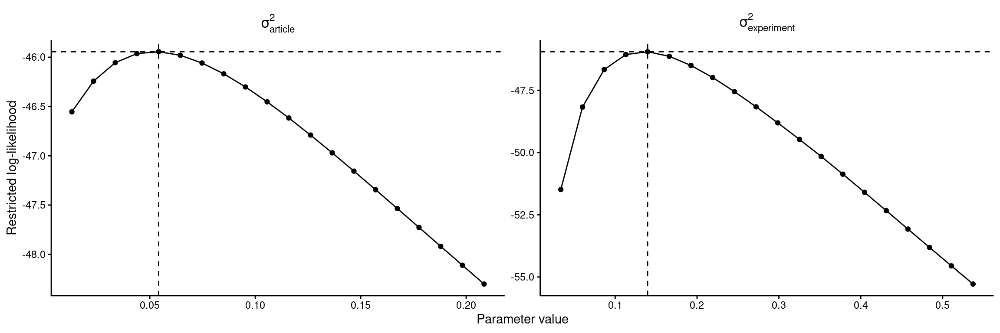
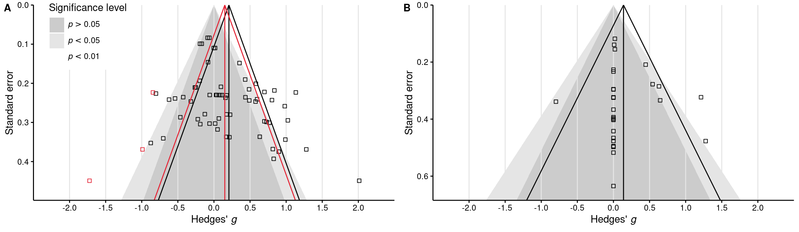
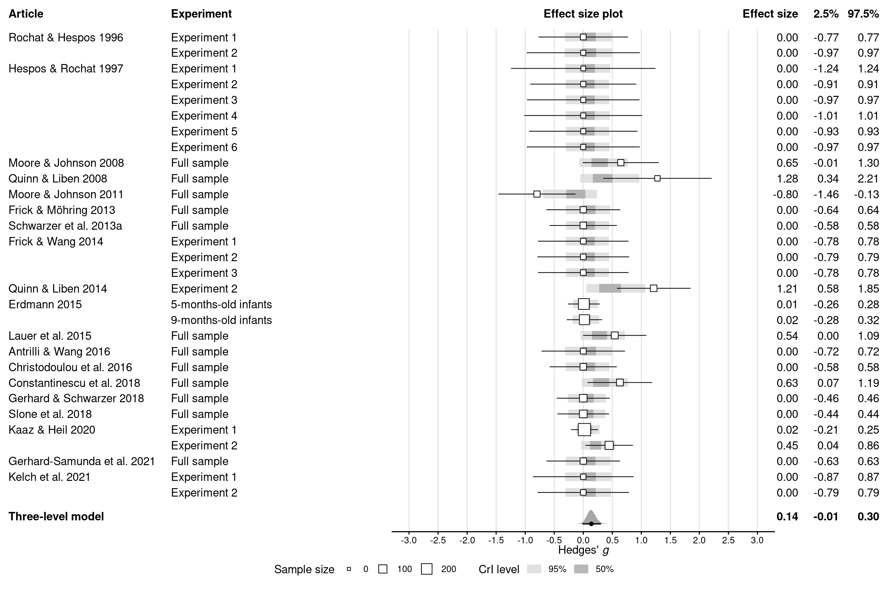
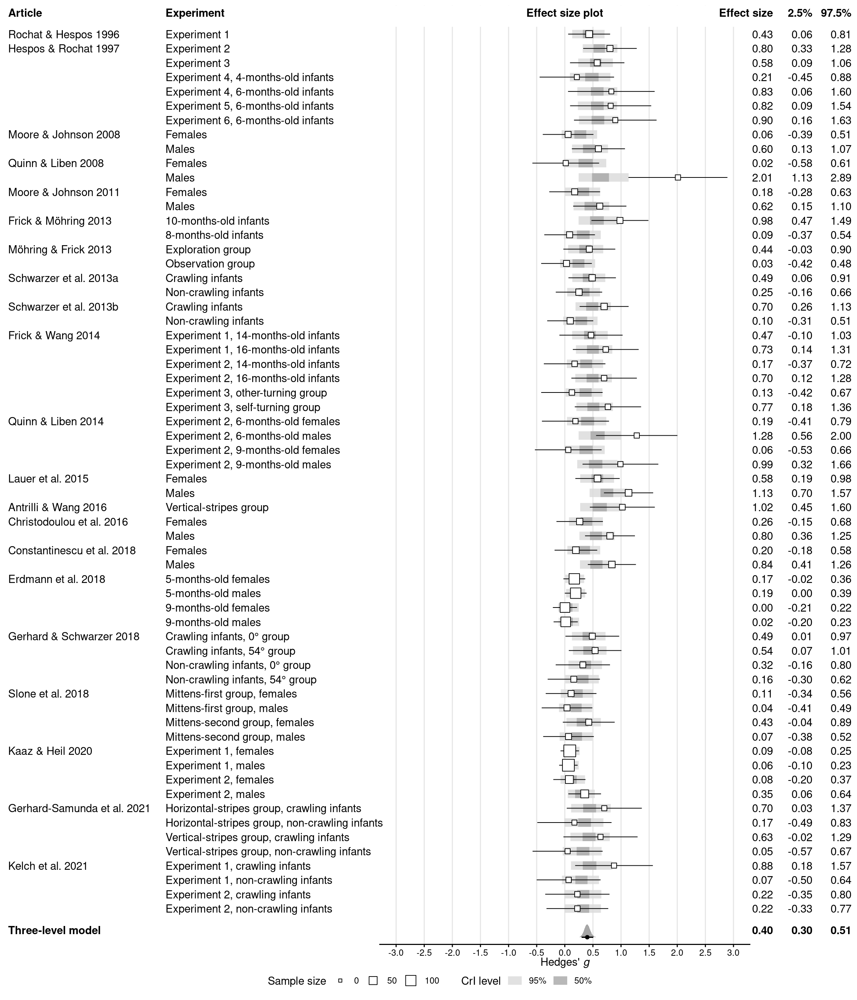
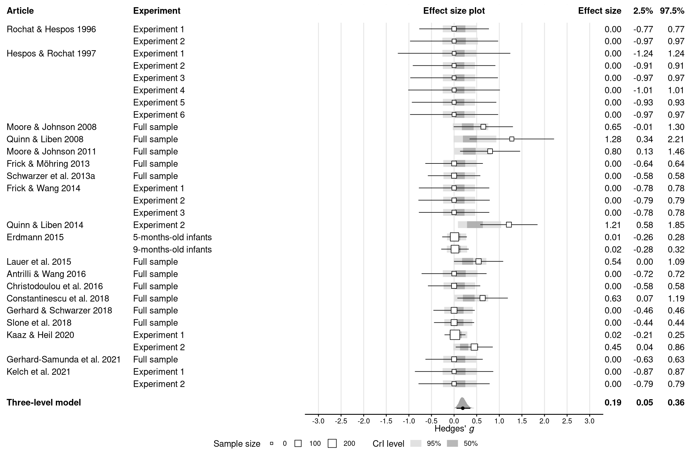

# Load packageslibrary(papaja)library(here)library(scales)library(tidyverse)library(furrr)library(metafor)library(brms)library(tidybayes)library(cowplot)# Load custom helper functionssource(here("misc", "helper_functions.R"))# Read work space from the main text scriptload(here("results", "workspace.RData"))
2.2 Supplementary methods
2.2.1 Correlation between dependent samples
Empirical estimate for the correlation (Supplementary Methods 1)
Code
# Compute empirical estimate of the correlation between dependent samplesri_empirical <- dat_meta %>%mutate(# Get effect size from paired samples t-test, one sample t-test, or ANOVAd_diff =case_when(!is.na(d) ~ d,!is.na(d_z_t) ~ d_z_t,!is.na(d_z_f) ~ d_z_f,!is.na(d_z_diff) ~ d_z_diff ),# Compute empirical correlation# Based on the SD of the difference and the SDs within the two conditionssd_diff = mean_diff / d_diff,ri = (sd_diff^2- sd_novel^2- sd_familiar^2) / (-2* sd_novel * sd_familiar) ) %>%pull(ri)# Subset articles that have an empirical estimate for the correlationdat_ri_empirical <-filter(dat_meta, !is.na(ri_empirical))# Summarise the estimated correlationslist(mean =mean(ri_empirical, na.rm =TRUE),median =median(ri_empirical, na.rm =TRUE),min =min(ri_empirical, na.rm =TRUE),max =max(ri_empirical, na.rm =TRUE)) %>%map(print_num)
2.3.1 Frequentist meta-analyses and meta-regression
Frequentist meta-analysis of mental rotation performance
Code
# Compute frequentist three-level model for the meta-analysis of rotationres_freq_meta <-rma.mv( gi, vi,random =~1| article / experiment,data = dat_meta,slab = experiment)print(res_freq_meta)
Multivariate Meta-Analysis Model (k = 62; method: REML)
Variance Components:
estim sqrt nlvls fixed factor
sigma^2.1 0.0521 0.2283 21 no article
sigma^2.2 0.1343 0.3665 62 no article/experiment
Test for Heterogeneity:
Q(df = 61) = 257.4619, p-val < .0001
Model Results:
estimate se zval pval ci.lb ci.ub
0.2102 0.0773 2.7209 0.0065 0.0588 0.3617 **
---
Signif. codes: 0 '***' 0.001 '**' 0.01 '*' 0.05 '.' 0.1 ' ' 1
Variance at each level of the model
Code
# Check share of variance at each level of the modelround(res_freq_meta$sigma2[1] /sum(res_freq_meta$sigma2), 3)round(res_freq_meta$sigma2[2] /sum(res_freq_meta$sigma2), 3)
[1] 0.28
[1] 0.72
Frequentist meta-regression of mental rotation performance
# Compute frequentist three-level model for the meta-analysis of genderres_freq_gender <-rma.mv( gi, vi,random =~1| article / experiment,data = dat_gender,slab = experiment)print(res_freq_gender)
Multivariate Meta-Analysis Model (k = 30; method: REML)
Variance Components:
estim sqrt nlvls fixed factor
sigma^2.1 0.0463 0.2153 19 no article
sigma^2.2 0.0048 0.0695 30 no article/experiment
Test for Heterogeneity:
Q(df = 29) = 38.9840, p-val = 0.1020
Model Results:
estimate se zval pval ci.lb ci.ub
0.1461 0.0795 1.8373 0.0662 -0.0098 0.3020 .
---
Signif. codes: 0 '***' 0.001 '**' 0.01 '*' 0.05 '.' 0.1 ' ' 1
Summary table (Supplementary Table 1)
Code
# Format all frequentist results together as a tabletabs2 <-map2_dfr(list(res_freq_meta, res_freq_reg, res_freq_gender),c("Meta-analysis of mental rotation","Meta-regression of mental rotation","Meta-analysis of gender differences" ),~print_res_freq_table(res_freq = .x, label_1 = .y, label_col_1 ="Model",print_sigma2s =TRUE )) %>%# Rename parameter labelsmutate(Parameter =c("Hedges' $g$","$\\sigma_{\\text{article}}^2$","$\\sigma_{\\text{experiment}}^2$","Intercept (Hedges' $g$)","Female - mixed","Male - female","Age (per year)","Habituation - VoE","(Female - mixed) $\\times$ age","(Male - female) $\\times$ age","$\\sigma_{\\text{article}}^2$","$\\sigma_{\\text{experiment}}^2$","Hedges' $g$","$\\sigma_{\\text{article}}^2$","$\\sigma_{\\text{experiment}}^2$" ) ) %>%# Replace NAs with blank cellsmutate(across(.fns =~ifelse(is.na(.), "", .)))# Save the tablewrite_tsv(tabs2, file =here(tables_dir, "tabs2_frequentist.tsv"))# Add footnotescolnames(tabs2)[4] <-str_c(colnames(tabs2)[4], "^a^")colnames(tabs2)[7] <-str_c(colnames(tabs2)[7], "^b^")# Display the tableapa_table( tabs2,note =str_c("^a^ = standard error, ","^b^ = 95\\% confidence interval." ),font_size ="scriptsize",escape =FALSE,align ="llrrrrr")
(#tab:unnamed-chunk-14)
**
Model
Parameter
Estimate
\(SE\)a
\(z\)
\(p\)
95% CIb
Meta-analysis of mental rotation
Hedges’ \(g\)
0.21
0.08
2.72
0.007
[0.06, 0.36]
\(\sigma_{\text{article}}^2\)
0.05
\(\sigma_{\text{experiment}}^2\)
0.13
Meta-regression of mental rotation
Intercept (Hedges’ \(g\))
0.39
0.11
3.56
< 0.001
[0.18, 0.61]
Female - mixed
0.03
0.22
0.12
0.902
[-0.40, 0.45]
Male - female
0.40
0.19
2.13
0.033
[0.03, 0.77]
Age (per year)
0.60
0.38
1.57
0.116
[-0.15, 1.34]
Habituation - VoE
0.44
0.20
2.27
0.024
[0.06, 0.82]
(Female - mixed) \(\times\) age
0.38
0.82
0.46
0.646
[-1.24, 1.99]
(Male - female) \(\times\) age
0.57
0.92
0.62
0.533
[-1.23, 2.38]
\(\sigma_{\text{article}}^2\)
0.03
\(\sigma_{\text{experiment}}^2\)
0.12
Meta-analysis of gender differences
Hedges’ \(g\)
0.15
0.08
1.84
0.066
[-0.01, 0.30]
\(\sigma_{\text{article}}^2\)
0.05
\(\sigma_{\text{experiment}}^2\)
0.00
Note.a = standard error, b = 95% confidence interval.
2.3.2 Jackknife (leave-one-out) analysis
Re-fit Bayesian meta-analysis, leaving one experiment out
Code
# Re-run the jackknife analysis if requestedif (run$jackknife_analysis) {# Re-fit the meta-analysis, leaving out one experiment at a time# Using parallelization with `furrr` n_cores <-availableCores() n_workers <- n_cores %/% n_chainsplan(multisession, workers = n_workers) tabs3 <-future_map_dfr(seq_len(nrow(dat_meta)), function(jackknife_index) { dat_jackknife <- dat_meta[-jackknife_index, ] res_jackknife <-update( res_meta,newdata = dat_jackknife,seed = seed,refresh =0 )print_res_table( res_jackknife,label_1 = dat_meta$article[jackknife_index],label_2 = dat_meta$group[jackknife_index],label_col_1 ="Article", label_col_2 ="Left-out experiment" ) }) %>%# Show article labels only for the first experiment (row) per articlemutate(Article =if_else(Article ==lag(Article, default =""), "", Article), )# Save the tablewrite_tsv(tabs3, file =here(tables_dir, "tabs3_jackknife.tsv"))}
Summary table (Supplementary Table 3)
Code
# Read jackknife table from filetabs3 <-read_tsv(here(tables_dir, "tabs3_jackknife.tsv"),col_types ="c", na =character())# Add footnotescolnames(tabs3)[6] <-str_c(colnames(tabs3)[6], "^a^")# Display the tableapa_table( tabs3,font_size ="scriptsize",note ="^a^ = intraclass correlation.",landscape =TRUE, escape =FALSE, align ="llrrrr")
(#tab:unnamed-chunk-18)
**
Article
Left-out experiment
Hedges’ \(g\)
\(\sigma_\text{article}^2\)
\(\sigma_\text{experiment}^2\)
\({ICC}\)a
Rochat & Hespos 1996
Experiment 1
0.20 [0.05, 0.37]
0.05 [0.00, 0.17]
0.15 [0.07, 0.27]
0.25 [0.00, 0.63]
Hespos & Rochat 1997
Experiment 2
0.20 [0.05, 0.36]
0.04 [0.00, 0.16]
0.15 [0.07, 0.27]
0.21 [0.00, 0.60]
Experiment 3
0.20 [0.05, 0.36]
0.05 [0.00, 0.16]
0.15 [0.07, 0.27]
0.22 [0.00, 0.61]
Experiment 4, 4-months-old infants
0.21 [0.06, 0.37]
0.06 [0.00, 0.18]
0.15 [0.07, 0.27]
0.27 [0.00, 0.65]
Experiment 4, 6-months-old infants
0.20 [0.06, 0.35]
0.05 [0.00, 0.16]
0.15 [0.07, 0.27]
0.22 [0.00, 0.61]
Experiment 5, 6-months-old infants
0.20 [0.05, 0.36]
0.05 [0.00, 0.16]
0.15 [0.07, 0.27]
0.22 [0.00, 0.61]
Experiment 6, 6-months-old infants
0.20 [0.05, 0.35]
0.04 [0.00, 0.16]
0.15 [0.07, 0.27]
0.22 [0.00, 0.61]
Moore & Johnson 2008
Females
0.22 [0.06, 0.38]
0.06 [0.00, 0.18]
0.15 [0.06, 0.27]
0.27 [0.00, 0.65]
Males
0.20 [0.04, 0.36]
0.05 [0.00, 0.17]
0.15 [0.06, 0.26]
0.26 [0.00, 0.64]
Quinn & Liben 2008
Females
0.22 [0.06, 0.39]
0.07 [0.00, 0.22]
0.14 [0.06, 0.26]
0.32 [0.00, 0.72]
Males
0.18 [0.04, 0.34]
0.05 [0.00, 0.16]
0.12 [0.05, 0.23]
0.28 [0.00, 0.66]
Moore & Johnson 2011
Females
0.20 [0.05, 0.36]
0.05 [0.00, 0.18]
0.15 [0.07, 0.27]
0.26 [0.00, 0.65]
Males
0.22 [0.07, 0.38]
0.05 [0.00, 0.16]
0.14 [0.06, 0.25]
0.26 [0.00, 0.64]
Frick & Möhring 2013
10-months-old infants
0.19 [0.04, 0.35]
0.05 [0.00, 0.17]
0.14 [0.06, 0.25]
0.26 [0.00, 0.65]
8-months-old infants
0.21 [0.06, 0.38]
0.06 [0.00, 0.18]
0.15 [0.06, 0.27]
0.27 [0.00, 0.66]
Möhring & Frick 2013
Exploration group
0.20 [0.05, 0.36]
0.05 [0.00, 0.17]
0.15 [0.07, 0.27]
0.25 [0.00, 0.64]
Observation group
0.21 [0.06, 0.37]
0.05 [0.00, 0.17]
0.15 [0.07, 0.27]
0.25 [0.00, 0.63]
Schwarzer et al. 2013a
Crawling infants
0.20 [0.04, 0.36]
0.06 [0.00, 0.18]
0.15 [0.06, 0.26]
0.27 [0.00, 0.66]
Non-crawling infants
0.22 [0.06, 0.38]
0.06 [0.00, 0.18]
0.14 [0.06, 0.26]
0.27 [0.00, 0.66]
Schwarzer et al. 2013b
Crawling infants
0.20 [0.04, 0.35]
0.05 [0.00, 0.17]
0.15 [0.06, 0.26]
0.26 [0.00, 0.64]
Non-crawling infants
0.21 [0.06, 0.38]
0.06 [0.00, 0.18]
0.15 [0.07, 0.27]
0.26 [0.00, 0.65]
Frick & Wang 2014
Experiment 1, 14-months-old infants
0.22 [0.06, 0.38]
0.06 [0.00, 0.18]
0.14 [0.06, 0.25]
0.30 [0.00, 0.67]
Experiment 1, 16-months-old infants
0.20 [0.05, 0.36]
0.05 [0.00, 0.16]
0.15 [0.07, 0.26]
0.25 [0.00, 0.63]
Experiment 2, 14-months-old infants
0.21 [0.05, 0.37]
0.05 [0.00, 0.16]
0.15 [0.07, 0.27]
0.24 [0.00, 0.61]
Experiment 2, 16-months-old infants
0.20 [0.05, 0.37]
0.05 [0.00, 0.17]
0.15 [0.07, 0.26]
0.25 [0.00, 0.63]
Experiment 3, other-turning group
0.21 [0.06, 0.37]
0.05 [0.00, 0.17]
0.15 [0.07, 0.26]
0.26 [0.00, 0.63]
Experiment 3, self-turning group
0.20 [0.05, 0.36]
0.05 [0.00, 0.16]
0.15 [0.07, 0.26]
0.25 [0.00, 0.63]
Quinn & Liben 2014
Experiment 2, 6-months-old females
0.22 [0.06, 0.38]
0.06 [0.00, 0.19]
0.14 [0.06, 0.26]
0.29 [0.00, 0.67]
Experiment 2, 6-months-old males
0.19 [0.04, 0.35]
0.05 [0.00, 0.16]
0.14 [0.06, 0.25]
0.25 [0.00, 0.64]
Experiment 2, 9-months-old females
0.21 [0.06, 0.37]
0.06 [0.00, 0.18]
0.15 [0.06, 0.26]
0.27 [0.00, 0.65]
Experiment 2, 9-months-old males
0.20 [0.05, 0.35]
0.05 [0.00, 0.16]
0.14 [0.06, 0.26]
0.24 [0.00, 0.63]
Lauer et al. 2015
Females
0.20 [0.05, 0.37]
0.05 [0.00, 0.17]
0.15 [0.07, 0.27]
0.23 [0.00, 0.63]
Males
0.19 [0.04, 0.34]
0.04 [0.00, 0.14]
0.14 [0.06, 0.25]
0.21 [0.00, 0.59]
Antrilli & Wang 2016
Vertical-stripes group
0.19 [0.04, 0.34]
0.05 [0.00, 0.15]
0.14 [0.06, 0.26]
0.24 [0.00, 0.62]
Christodoulou et al. 2016
Females
0.21 [0.06, 0.37]
0.05 [0.00, 0.16]
0.15 [0.07, 0.27]
0.22 [0.00, 0.61]
Males
0.22 [0.08, 0.37]
0.04 [0.00, 0.14]
0.14 [0.06, 0.25]
0.21 [0.00, 0.58]
Constantinescu et al. 2018
Females
0.22 [0.06, 0.39]
0.06 [0.00, 0.19]
0.14 [0.06, 0.25]
0.31 [0.00, 0.70]
Males
0.19 [0.04, 0.35]
0.06 [0.00, 0.18]
0.13 [0.06, 0.25]
0.29 [0.00, 0.68]
Erdmann et al. 2018
5-months-old females
0.21 [0.06, 0.38]
0.05 [0.00, 0.17]
0.15 [0.07, 0.27]
0.23 [0.00, 0.62]
5-months-old males
0.21 [0.06, 0.37]
0.05 [0.00, 0.16]
0.15 [0.07, 0.27]
0.22 [0.00, 0.60]
9-months-old females
0.21 [0.06, 0.36]
0.05 [0.00, 0.16]
0.16 [0.07, 0.28]
0.23 [0.00, 0.61]
9-months-old males
0.21 [0.06, 0.37]
0.05 [0.00, 0.16]
0.15 [0.07, 0.28]
0.23 [0.00, 0.61]
Gerhard & Schwarzer 2018
Crawling infants, 0° group
0.20 [0.04, 0.37]
0.06 [0.00, 0.18]
0.14 [0.06, 0.26]
0.28 [0.00, 0.66]
Crawling infants, 54° group
0.22 [0.07, 0.37]
0.05 [0.00, 0.16]
0.14 [0.06, 0.26]
0.25 [0.00, 0.63]
Non-crawling infants, 0° group
0.21 [0.06, 0.37]
0.05 [0.00, 0.16]
0.15 [0.07, 0.27]
0.23 [0.00, 0.61]
Non-crawling infants, 54° group
0.21 [0.05, 0.36]
0.05 [0.00, 0.16]
0.15 [0.07, 0.27]
0.24 [0.00, 0.62]
Slone et al. 2018
Mittens-first group, females
0.21 [0.05, 0.37]
0.05 [0.00, 0.17]
0.15 [0.07, 0.27]
0.24 [0.00, 0.62]
Mittens-first group, males
0.21 [0.05, 0.37]
0.05 [0.00, 0.17]
0.15 [0.07, 0.27]
0.24 [0.00, 0.62]
Mittens-second group, females
0.22 [0.06, 0.37]
0.05 [0.00, 0.16]
0.15 [0.07, 0.26]
0.24 [0.00, 0.62]
Mittens-second group, males
0.21 [0.06, 0.36]
0.05 [0.00, 0.16]
0.15 [0.07, 0.27]
0.24 [0.00, 0.62]
Kaaz & Heil 2020
Experiment 1, females
0.21 [0.06, 0.37]
0.05 [0.00, 0.16]
0.15 [0.07, 0.27]
0.23 [0.00, 0.61]
Experiment 1, males
0.21 [0.06, 0.37]
0.05 [0.00, 0.17]
0.15 [0.07, 0.27]
0.24 [0.00, 0.62]
Experiment 2, females
0.21 [0.06, 0.37]
0.05 [0.00, 0.16]
0.15 [0.07, 0.27]
0.23 [0.00, 0.60]
Experiment 2, males
0.20 [0.05, 0.36]
0.05 [0.00, 0.17]
0.15 [0.07, 0.27]
0.26 [0.00, 0.64]
Gerhard-Samunda et al. 2021
Horizontal-stripes group, crawling infants
0.22 [0.06, 0.38]
0.05 [0.00, 0.17]
0.14 [0.06, 0.25]
0.27 [0.00, 0.65]
Horizontal-stripes group, non-crawling infants
0.21 [0.06, 0.37]
0.05 [0.00, 0.17]
0.15 [0.07, 0.27]
0.25 [0.00, 0.62]
Vertical-stripes group, crawling infants
0.20 [0.05, 0.36]
0.06 [0.00, 0.18]
0.14 [0.06, 0.26]
0.28 [0.00, 0.65]
Vertical-stripes group, non-crawling infants
0.21 [0.06, 0.37]
0.05 [0.00, 0.16]
0.15 [0.07, 0.27]
0.25 [0.00, 0.62]
Kelch et al. 2021
Experiment 1, crawling infants
0.22 [0.07, 0.37]
0.05 [0.00, 0.16]
0.14 [0.06, 0.25]
0.24 [0.00, 0.63]
Experiment 1, non-crawling infants
0.21 [0.06, 0.36]
0.05 [0.00, 0.16]
0.15 [0.07, 0.27]
0.24 [0.00, 0.62]
Experiment 2, crawling infants
0.21 [0.06, 0.37]
0.05 [0.00, 0.16]
0.15 [0.07, 0.27]
0.23 [0.00, 0.61]
Experiment 2, non-crawling infants
0.21 [0.05, 0.37]
0.06 [0.00, 0.18]
0.15 [0.07, 0.27]
0.26 [0.00, 0.64]
Note.a = intraclass correlation.
2.3.3 PRISMA checklist
Print PRISMA checklist (Supplementary Table 4)
Code
# Read PRISMA checklist from filetabs4 <-read_tsv(here(data_dir, "05_prisma.tsv"), na =character())# Display the tableapa_table( tabs4,font_size ="scriptsize",landscape =TRUE,align ="lllll"# For Word# align = "p{1.5cm}p{2.5cm}p{1cm}p{12cm}p{5.5cm}" # For LaTeX)
(#tab:unnamed-chunk-20)
**
Section
Topic
Item #
Checklist item
Location where item is reported
Title
Title
1
Identify the report as a systematic review.
–
Abstract
Abstract
2
See the PRISMA 2020 for Abstracts checklist.
Abstract
Introduction
Rationale
3
Describe the rationale for the review in the context of existing knowledge.
Introduction
Objectives
4
Provide an explicit statement of the objective(s) or question(s) the review addresses.
Introduction
Methods
Eligibility criteria
5
Specify the inclusion and exclusion criteria for the review and how studies were grouped for the syntheses.
Methods: Eligibility criteria
Information sources
6
Specify all databases, registers, websites, organisations, reference lists and other sources searched or consulted to identify studies. Specify the date when each source was last searched or consulted.
Methods: Information sources and search strategy
Search strategy
7
Present the full search strategies for all databases, registers and websites, including any filters and limits used.
Methods: Information sources and search strategy
Selection process
8
Specify the methods used to decide whether a study met the inclusion criteria of the review, including how many reviewers screened each record and each report retrieved, whether they worked independently, and if applicable, details of automation tools used in the process.
Methods: Selection process
Data collection process
9
Specify the methods used to collect data from reports, including how many reviewers collected data from each report, whether they worked independently, any processes for obtaining or confirming data from study investigators, and if applicable, details of automation tools used in the process.
Methods: Data collection process and items
Data items
10a
List and define all outcomes for which data were sought. Specify whether all results that were compatible with each outcome domain in each study were sought (e.g. for all measures, time points, analyses), and if not, the methods used to decide which results to collect.
Methods: Data collection process and items
10b
List and define all other variables for which data were sought (e.g. participant and intervention characteristics, funding sources). Describe any assumptions made about any missing or unclear information.
Methods: Data collection process and items
Study risk of bias assessment
11
Specify the methods used to assess risk of bias in the included studies, including details of the tool(s) used, how many reviewers assessed each study and whether they worked independently, and if applicable, details of automation tools used in the process.
Methods: Selection process
Effect measures
12
Specify for each outcome the effect measure(s) (e.g. risk ratio, mean difference) used in the synthesis or presentation of results.
Methods: Effect measures
Synthesis methods
13a
Describe the processes used to decide which studies were eligible for each synthesis (e.g. tabulating the study intervention characteristics and comparing against the planned groups for each synthesis (item #5)).
Methods: Data collection process and items
13b
Describe any methods required to prepare the data for presentation or synthesis, such as handling of missing summary statistics, or data conversions.
Methods: Effect measures
13c
Describe any methods used to tabulate or visually display results of individual studies and syntheses.
Results: Figure 1
13d
Describe any methods used to synthesize results and provide a rationale for the choice(s). If meta-analysis was performed, describe the model(s), method(s) to identify the presence and extent of statistical heterogeneity, and software package(s) used.
Describe any methods used to assess risk of bias due to missing results in a synthesis (arising from reporting biases).
Methods: Publication bias asssessment
Certainty assessment
15
Describe any methods used to assess certainty (or confidence) in the body of evidence for an outcome.
Methods: Publication bias asssessment
Results
Study selection
16a
Describe the results of the search and selection process, from the number of records identified in the search to the number of studies included in the review, ideally using a flow diagram.
Cite studies that might appear to meet the inclusion criteria, but which were excluded, and explain why they were excluded.
Methods: Selection process
Study characteristics
17
Cite each included study and present its characteristics.
Supplementary Table 1
Risk of bias in studies
18
Present assessments of risk of bias for each included study.
–
Results of individual studies
19
For all outcomes, present, for each study: (a) summary statistics for each group (where appropriate) and (b) an effect estimate and its precision (e.g. confidence/credible interval), ideally using structured tables or plots.
Results: Figure 1
Results of syntheses
20a
For each synthesis, briefly summarise the characteristics and risk of bias among contributing studies.
Introduction
20b
Present results of all statistical syntheses conducted. If meta-analysis was done, present for each the summary estimate and its precision (e.g. confidence/credible interval) and measures of statistical heterogeneity. If comparing groups, describe the direction of the effect.
Results: Mental rotation performance
20c
Present results of all investigations of possible causes of heterogeneity among study results.
Results: Effects of gender, age, and task
20d
Present results of all sensitivity analyses conducted to assess the robustness of the synthesized results.
Supplementary Tables 7, 8, and 9
Reporting biases
21
Present assessments of risk of bias due to missing results (arising from reporting biases) for each synthesis assessed.
Present assessments of certainty (or confidence) in the body of evidence for each outcome assessed.
Results: Figure 1; Results: Figure 2
Discussion
Discussion
23a
Provide a general interpretation of the results in the context of other evidence.
Discussion
23b
Discuss any limitations of the evidence included in the review.
Discussion
23c
Discuss any limitations of the review processes used.
Discussion
23d
Discuss implications of the results for practice, policy, and future research.
Discussion
Other information
Registration and protocol
24a
Provide registration information for the review, including register name and registration number, or state that the review was not registered.
–
24b
Indicate where the review protocol can be accessed, or state that a protocol was not prepared.
–
24c
Describe and explain any amendments to information provided at registration or in the protocol.
–
Support
25
Describe sources of financial or non-financial support for the review, and the role of the funders or sponsors in the review.
–
Competing interests
26
Declare any competing interests of review authors.
Competing interests
Availability of data, code and other materials
27
Report which of the following are publicly available and where they can be found: template data collection forms; data extracted from included studies; data used for all analyses; analytic code; any other materials used in the review.
Methods: Data availability; Methods: Code availability
2.3.4 Effect size conversion
Formulas for mental rotation performance (Supplementary Table 5)
=
Available statistics
Conversion to standardized mean difference (Hedges’ \(g\))
Re-fit Bayesian meta-analysis with different correlations and priors
Code
# Re-run the sensitivity analyses if requestedif (run$sensitivity_analysis) {# Re-run the meta-analysis for different values of r_assumed sens_ri <-seq(-0.9, 0.9, by =0.3) %>%map_dfr(function(ri_sens) {# Re-compute standard errors of the effect sizes dat_ri_sens <-mutate( dat_meta,vi = (dfi / (dfi -2)) * ((2* (1- ri_sens)) / ni) * (1+ gi^2* (ni / (2* (1- ri_sens)))) - (gi^2/ ji^2),sei =sqrt(vi) )# Re-run meta-analysis of mental rotation performance res_meta <-update( res_meta,newdata = dat_ri_sens,seed = seed,refresh =0 )# Re-run meta-regression of mental rotation performance res_reg <-update( res_reg,newdata = dat_ri_sens,seed = seed,refresh =0 )# Return both as a tibble and add a labelreturn(tibble(manipulation_value =str_c("$r$ = ", print_num(ri_sens)),res_meta =list(res_meta),res_reg =list(res_reg), ) ) }) %>%bind_cols(manipulation_name =c("Assumed correlation", rep("", nrow(.) -1)), . )# Prior sensitivity analysis sens_prior <-list(# Less informative prior for the intercept`$b\\sim\\mathcal{U}(-10,10)$`=c(set_prior("uniform(-10, 10)", class ="b", coef ="Intercept"),set_prior("normal(0, 0.5)", class ="b"),set_prior("cauchy(0, 0.3)", class ="sd") ),# More informative prior for the intercept`$b\\sim\\mathcal{N}(0,0.2)$`=c(set_prior("normal(0, 0.2)", class ="b", coef ="Intercept"),set_prior("normal(0, 0.5)", class ="b"),set_prior("cauchy(0, 0.3)", class ="sd") ),# Less informative prior for the standard deviations`$\\sigma\\sim\\mathcal{U}(0,10)$`=c(set_prior("normal(0, 1)", class ="b", coef ="Intercept"),set_prior("normal(0, 0.5)", class ="b"),set_prior("uniform(0, 10)", class ="sd") ),# More informative prior for the standard deviations`$\\sigma\\sim\\text{Student-}t(10,0,0.2)$`=c(set_prior("normal(0, 1)", class ="b", coef ="Intercept"),set_prior("normal(0, 0.5)", class ="b"),set_prior("student_t(10, 0, 0.2)", class ="sd") ) ) %>%map2_dfr(names(.), function(prior_sens, prior_name) {# Re-run meta-analysis of mental rotation performance res_meta <-update( res_meta,prior = prior_sens,seed = seed,refresh =0 )# Re-run meta-regression of mental rotation performance res_reg <-update( res_reg,prior = prior_sens,seed = seed,refresh =0 )# Re-run meta-analysis of gender differences res_gender <-update( res_gender,prior = prior_sens,seed = seed,refresh =0 )# Return both as a tibble together with the labelreturn(tibble(manipulation_value = prior_name,res_meta =list(res_meta),res_reg =list(res_reg),res_gender =list(res_gender) ) ) }) %>%bind_cols(manipulation_name =c("Prior specification", rep("", nrow(.) -1)), . )# Combine results from all sensitivity analyses sens <-bind_rows(sens_ri, sens_prior)# Create table for the meta-analysis of mental rotation performance tabs7 <- sens %>%select(res_meta, manipulation_name, manipulation_value) %>%pmap_dfr(function(res_meta, manipulation_name, manipulation_value) {print_res_table( res_meta,label_1 = manipulation_name, label_2 = manipulation_value,label_col_1 ="Manipulation", label_col_2 =" " ) })write_tsv(tabs7, file =here(tables_dir, "tabs7_sens_meta.tsv"))# Create table for the meta-regression of mental rotation performance tabs8 <- sens %>%select( res_reg, manipulation_name, manipulation_value ) %>%pmap_dfr(function(res_reg, manipulation_name, manipulation_value) {print_res_reg_table( res_reg,label_1 = manipulation_name, label_2 = manipulation_value,label_col_1 ="Manipulation", label_col_2 =" " ) })write_tsv(tabs8, file =here(tables_dir, "tabs8_sens_reg.tsv"))# Create table for the meta-analysis of gender differences tabs9 <- sens %>%filter(!map_lgl(res_gender, is.null)) %>%select(res_gender, manipulation_name, manipulation_value) %>%pmap_dfr(function(res_gender, manipulation_name, manipulation_value) {print_res_table( res_gender,label_1 = manipulation_name, label_2 = manipulation_value,label_col_1 ="Manipulation", label_col_2 =" " ) })write_tsv(tabs9, file =here(tables_dir, "tabs9_sens_gender.tsv"))}
Sensitivity table for mental rotation performance (Supplementary Table 7)
Code
# Load sensitivity analysis table from filetabs7 <-read_tsv(here(tables_dir, "tabs7_sens_meta.tsv"),col_types ="c", na =character(), trim_ws =FALSE)# Add footnotescolnames(tabs7)[6] <-str_c(colnames(tabs7)[6], "^a}")tabs7$``[8] <-str_c(tabs7$``[8], "^b^")tabs7$``[9] <-str_c(tabs7$``[9], "^c^")tabs7$``[10] <-str_c(tabs7$``[10], "^d^")tabs7$``[11] <-str_c(tabs7$``[11], "^e^")# Display the tableapa_table( tabs7,note =str_c("^a^ = intraclass correlation, ","^b^ = an uninformative (uniform) prior on the mean effect, ","^c^ = an informative (normal) prior on the mean effect, ","^d^ = an uninformative (uniform) prior on the standard deviations, ","^e^ = an informative (Student-$t$) prior on the standard deviations." ),placement ="hb", font_size ="scriptsize", escape =FALSE, align ="llrrrr")
(#tab:unnamed-chunk-24)
**
Manipulation
Hedges’ \(g\)
\(\sigma_\text{article}^2\)
\(\sigma_\text{experiment}^2\)
\({ICC}\)^a}
Assumed correlation
\(r\) = -0.90
0.18 [0.03, 0.35]
0.05 [0.00, 0.17]
0.01 [0.00, 0.07]
0.76 [0.05, 1.00]
\(r\) = -0.60
0.19 [0.04, 0.36]
0.06 [0.00, 0.18]
0.02 [0.00, 0.09]
0.77 [0.06, 1.00]
\(r\) = -0.30
0.20 [0.04, 0.36]
0.07 [0.00, 0.19]
0.03 [0.00, 0.12]
0.70 [0.03, 1.00]
\(r\) = 0.00
0.20 [0.05, 0.36]
0.06 [0.00, 0.18]
0.06 [0.00, 0.17]
0.52 [0.01, 0.99]
\(r\) = 0.30
0.20 [0.05, 0.36]
0.06 [0.00, 0.17]
0.11 [0.04, 0.23]
0.32 [0.00, 0.75]
\(r\) = 0.60
0.21 [0.06, 0.36]
0.05 [0.00, 0.17]
0.16 [0.08, 0.28]
0.23 [0.00, 0.59]
\(r\) = 0.90
0.21 [0.05, 0.37]
0.05 [0.00, 0.16]
0.21 [0.13, 0.34]
0.17 [0.00, 0.48]
Prior specification
\(b\sim\mathcal{U}(-10,10)\)b
0.21 [0.06, 0.37]
0.05 [0.00, 0.17]
0.15 [0.07, 0.26]
0.25 [0.00, 0.63]
\(b\sim\mathcal{N}(0,0.2)\)c
0.18 [0.04, 0.32]
0.05 [0.00, 0.16]
0.15 [0.07, 0.26]
0.24 [0.00, 0.62]
\(\sigma\sim\mathcal{U}(0,10)\)d
0.21 [0.05, 0.38]
0.06 [0.00, 0.19]
0.15 [0.07, 0.27]
0.28 [0.00, 0.65]
\(\sigma\sim\text{Student-}t(10,0,0.2)\)e
0.21 [0.06, 0.36]
0.05 [0.00, 0.14]
0.14 [0.06, 0.24]
0.25 [0.00, 0.61]
Note.a = intraclass correlation, b = an uninformative (uniform) prior on the mean effect, c = an informative (normal) prior on the mean effect, d = an uninformative (uniform) prior on the standard deviations, e = an informative (Student-\(t\)) prior on the standard deviations.
Sensitivity table for meta-regression (Supplementary Table 8)
Code
# Load sensitivity analysis table from filetabs8 <-read_tsv(here(tables_dir, "tabs8_sens_reg.tsv"),col_types ="c", na =character(), trim_ws =FALSE)# Add footnotescolnames(tabs8)[7] <-str_c(colnames(tabs8)[7], "^a^")tabs8$``[8] <-str_c(tabs8$``[8], "^b^")tabs8$``[9] <-str_c(tabs8$``[9], "^c^")tabs8$``[10] <-str_c(tabs8$``[10], "^d^")tabs8$``[11] <-str_c(tabs8$``[11], "^e^")# Display the tableapa_table( tabs8,note =str_c("^a^ = violation of expectation, ","^b^ = an uninformative (uniform) prior on the mean effect, ","^c^ = an informative (normal) prior on the mean effect, ","^d^ = an uninformative (uniform) prior on the standard deviations, ","^e^ = an informative (Student-$t$) prior on the standard deviations." ),font_size ="scriptsize", landscape =TRUE, escape =FALSE,align ="llrrrrrrr")
(#tab:unnamed-chunk-26)
**
Manipulation
Intercept
Female - mixed
Male - female
Age (per year)
Habituation - VoEa
[Female - mixed] \(\times\) age
[Male - female] \(\times\) age
Assumed correlation
\(r\) = -0.90
0.29 [0.10, 0.49]
-0.03 [-0.39, 0.34]
0.19 [-0.06, 0.45]
0.34 [-0.20, 0.87]
0.36 [-0.02, 0.73]
0.20 [-0.59, 0.99]
0.14 [-0.67, 0.95]
\(r\) = -0.60
0.30 [0.11, 0.49]
-0.02 [-0.37, 0.36]
0.20 [-0.04, 0.46]
0.36 [-0.17, 0.89]
0.36 [-0.01, 0.72]
0.20 [-0.59, 0.97]
0.14 [-0.65, 0.94]
\(r\) = -0.30
0.31 [0.12, 0.51]
0.00 [-0.36, 0.36]
0.21 [-0.02, 0.48]
0.37 [-0.15, 0.90]
0.36 [0.00, 0.72]
0.18 [-0.61, 0.96]
0.15 [-0.63, 0.93]
\(r\) = 0.00
0.32 [0.12, 0.51]
0.00 [-0.36, 0.37]
0.25 [0.00, 0.53]
0.37 [-0.16, 0.91]
0.37 [0.00, 0.73]
0.16 [-0.64, 0.94]
0.16 [-0.63, 0.95]
\(r\) = 0.30
0.33 [0.13, 0.52]
-0.01 [-0.37, 0.35]
0.30 [0.01, 0.59]
0.34 [-0.21, 0.89]
0.37 [0.01, 0.72]
0.15 [-0.67, 0.95]
0.17 [-0.64, 0.98]
\(r\) = 0.60
0.33 [0.14, 0.53]
-0.02 [-0.38, 0.36]
0.33 [0.03, 0.64]
0.32 [-0.24, 0.88]
0.38 [0.02, 0.74]
0.15 [-0.67, 0.95]
0.17 [-0.66, 0.99]
\(r\) = 0.90
0.34 [0.14, 0.53]
-0.02 [-0.39, 0.36]
0.36 [0.03, 0.68]
0.29 [-0.27, 0.86]
0.39 [0.03, 0.74]
0.15 [-0.69, 0.94]
0.16 [-0.67, 1.00]
Prior specification
\(b\sim\mathcal{U}(-10,10)\)b
0.34 [0.14, 0.53]
-0.01 [-0.37, 0.36]
0.32 [0.02, 0.62]
0.33 [-0.23, 0.89]
0.38 [0.02, 0.74]
0.16 [-0.65, 0.95]
0.17 [-0.66, 0.99]
\(b\sim\mathcal{N}(0,0.2)\)c
0.27 [0.09, 0.44]
-0.07 [-0.43, 0.29]
0.31 [0.02, 0.62]
0.31 [-0.26, 0.87]
0.31 [-0.06, 0.65]
0.09 [-0.74, 0.88]
0.14 [-0.68, 0.97]
\(\sigma\sim\mathcal{U}(0,10)\)d
0.33 [0.13, 0.53]
-0.01 [-0.39, 0.37]
0.32 [0.01, 0.63]
0.33 [-0.25, 0.91]
0.38 [-0.01, 0.74]
0.13 [-0.70, 0.94]
0.16 [-0.67, 0.98]
\(\sigma\sim\text{Student-}t(10,0,0.2)\)e
0.33 [0.14, 0.52]
-0.02 [-0.37, 0.34]
0.32 [0.03, 0.62]
0.34 [-0.22, 0.88]
0.38 [0.03, 0.72]
0.17 [-0.64, 0.96]
0.18 [-0.64, 0.99]
Note.a = violation of expectation, b = an uninformative (uniform) prior on the mean effect, c = an informative (normal) prior on the mean effect, d = an uninformative (uniform) prior on the standard deviations, e = an informative (Student-\(t\)) prior on the standard deviations.
Sensitivity table for gender differences (Supplementary Table 9)
Code
# Load sensitivity analysis table from filetabs9 <-read_tsv(here(tables_dir, "tabs9_sens_gender.tsv"),col_types ="c", na =character(), trim_ws =FALSE)# Add footnotescolnames(tabs9)[6] <-str_c(colnames(tabs9)[6], "^a}")tabs9$``[1] <-str_c(tabs9$``[1], "^b^")tabs9$``[2] <-str_c(tabs9$``[2], "^c^")tabs9$``[3] <-str_c(tabs9$``[3], "^d^")tabs9$``[4] <-str_c(tabs9$``[4], "^e^")# Display the tableapa_table( tabs9,note =str_c("^a^ = intraclass correlation, ","^b^ = an uninformative (uniform) prior on the mean effect, ","^c^ = an informative (normal) prior on the mean effect, ","^d^ = an uninformative (uniform) prior on the standard deviations, ","^e^ = an informative (Student-$t$) prior on the standard deviations." ),font_size ="scriptsize", escape =FALSE, align ="llrrrrrrr")
(#tab:unnamed-chunk-28)
**
Manipulation
Hedges’ \(g\)
\(\sigma_\text{article}^2\)
\(\sigma_\text{experiment}^2\)
\({ICC}\)^a}
Prior specification
\(b\sim\mathcal{U}(-10,10)\)b
0.14 [-0.01, 0.31]
0.04 [0.00, 0.17]
0.02 [0.00, 0.10]
0.56 [0.00, 1.00]
\(b\sim\mathcal{N}(0,0.2)\)c
0.12 [-0.02, 0.27]
0.04 [0.00, 0.16]
0.02 [0.00, 0.10]
0.55 [0.00, 1.00]
\(\sigma\sim\mathcal{U}(0,10)\)d
0.14 [-0.02, 0.33]
0.06 [0.00, 0.23]
0.03 [0.00, 0.12]
0.59 [0.00, 1.00]
\(\sigma\sim\text{Student-}t(10,0,0.2)\)e
0.14 [-0.01, 0.30]
0.03 [0.00, 0.13]
0.02 [0.00, 0.09]
0.54 [0.00, 1.00]
Note.a = intraclass correlation, b = an uninformative (uniform) prior on the mean effect, c = an informative (normal) prior on the mean effect, d = an uninformative (uniform) prior on the standard deviations, e = an informative (Student-\(t\)) prior on the standard deviations.
2.3.6 Publication bias correction
Fit trim-and-fill and selection models
Code
# Re-fit the two frequentist meta-analyses using a two-level model# This is because `rma.mv()` is not supported for trim-and-fill/selection modelsres_freq_2_lvl <-list(meta = dat_meta, gender = dat_gender) %>%map(function(x) rma.uni(gi, vi, data = x))# Trim-and-fill analysisres_trim_fill <- res_freq_2_lvl %>%map(trimfill)# Easy weight function selection model (see metafor docs and Lauer et al., 2019)res_selection_weights <- res_freq_2_lvl %>%map(selmodel, type ="stepfun", steps =c(0.01, 0.05, 1.00))# More selection models based on four different step functionsres_selection_steps <- res_freq_2_lvl %>%map(function(res) {# Define custom step functionstibble(delta_one_tailed_moderate =c(1, 0.99, 0.95, 0.80, 0.75, 0.65, 0.60, 0.55,0.50, 0.50, 0.50, 0.50, 0.50, 0.50 ),delta_one_tailed_severe =c(1, 0.99, 0.90, 0.75, 0.60, 0.50, 0.40, 0.35,0.30, 0.25, 0.10, 0.10, 0.10, 0.10 ),delta_two_tailed_moderate =c(1, 0.99, 0.95, 0.90, 0.80, 0.75, 0.60, 0.60,0.75, 0.80, 0.90, 0.95, 0.99, 1.00 ),delta_two_tailed_severe =c(1, 0.99, 0.90, 0.75, 0.60, 0.50, 0.25, 0.25,0.50, 0.60, 0.75, 0.90, 0.99, 1.00 ) ) %>%# Fit selection model for every step functionmap(function(delta) {selmodel( res,type ="stepfun",steps =c(0.005, 0.01, 0.05, 0.10, 0.25, 0.35, 0.50,0.65, 0.75, 0.90, 0.95, 0.99, 0.995, 1 ),delta = delta ) }) })# Create separate tables for the two different meta-analyses (rotation/gender)# Each table will contain the results of all trim-and-fill and selection modelstabs_correction <-map(names(res_freq_2_lvl), function(name) {# Combine two-level, trim-and-fill, and selection modelstibble(res =c(list( res_freq_2_lvl[[name]], res_trim_fill[[name]], res_selection_weights[[name]] ), res_selection_steps[[name]] ),label_1 =c("Two-level model", "Trim-and-fill model","Selection models", "", "", "", "" ),label_2 =c("--", "--", "Weight function, $p$ value cutoffs [0.05, 0.01]","One-tailed, moderate bias", "One-tailed, severe bias","Two-tailed, moderate bias", "Two-tailed, severe bias" ) ) %>%# Combine and format as a tablepmap_dfr(~print_res_freq_table(res_freq = ..1, label_1 = ..2, label_2 = ..3,label_col_1 ="Model", label_col_2 ="Sub-model",print_sigma2s =FALSE ) ) %>%select(-Parameter) %>%rename(`Hedges' $g$`= Estimate)}) %>%set_names(names(res_freq_2_lvl))# Save the tablestabs10 <- tabs_correction$metatabs11 <- tabs_correction$genderwrite_tsv(tabs10, file =here(tables_dir, "tabs10_correction_meta.tsv"))write_tsv(tabs11, file =here(tables_dir, "tabs11_correction_gender.tsv"))
Correction table for mental rotation performance (Supplementary Table 10)
# Get profile likelihoods for sigmas to check that REML has convergedprof_liks <-profile(res_freq_meta, plot =FALSE)# Combine frequentist profile likelihood results into one data frameprof_liks_df <- prof_liks %>%head(-1) %>%# Remove the `comp` elementmap(~tibble(sigma2 = .$sigma2, ll = .$ll)) %>%bind_rows(.id ="parameter") %>%# Create new labels for plottingmutate(parameter =factor( parameter,levels =c(1, 2),labels =c("italic(sigma)[article]^2", "italic(sigma)[experiment]^2") ))# Find the best-fitting parameter estimatesprof_liks_max <- prof_liks_df %>%group_by(parameter) %>%filter(ll ==max(ll))# Create plotprof_liks_df %>%ggplot(aes(x = sigma2, y = ll)) +facet_wrap(~parameter, scales ="free", labeller = label_parsed) +# Best fitting parametersgeom_hline(aes(yintercept = ll),data = prof_liks_max, linetype ="dashed" ) +geom_vline(aes(xintercept = sigma2),data = prof_liks_max, linetype ="dashed" ) +# All tested parametersgeom_point() +geom_line() +# Stylinglabs(x ="Parameter value", y ="Restricted log-likelihood") +theme_classic() +theme(axis.line =element_line(colour ="black"),axis.text =element_text(family ="Helvetica", color ="black"),axis.ticks =element_line(color ="black"),strip.background =element_blank(),strip.text =element_text(family ="Helvetica", color ="black", size =12),text =element_text(family ="Helvetica", color ="black") )# Save the plotggsave(here(figures_dir, "figs2_convergence_freq.pdf"), width =12, height =4)
Profiling sigma2 = 1
Profiling sigma2 = 2

2.4.2 Trim-and-fill plot
Funnel plot for trim-and-fill model (Supplementary Figure 3)
Code
# Create new funnel plots that take the trim-and-fill results into accountplots_funnel_trim_fill <-map2( res_trim_fill, plots_funnel,function(res, plot) {# Compute new funnel funnel_trim_fill <-with(list(z_crit_05 = stats::qnorm(0.975),max_se =max(sqrt(res$vi)) +0.05 ), {data.frame(x =c( res$b - z_crit_05 *sqrt(max_se^2), res$b, res$b + z_crit_05 *sqrt(max_se^2) ),y =c(max_se, 0, max_se) ) } )# Add new funnel on top of the original funnel plot trim_fill_color <-ifelse(sum(res$fill) >=1, "#e42536", NA) plot +# Add trim-and-fill funnelgeom_path(data = funnel_trim_fill,aes(x = x, y = y),color = trim_fill_color ) +geom_vline(xintercept = res$b, color = trim_fill_color) +# Add trim-and-fill studiesgeom_point(data =with(res, tibble(gi = yi[fill], sei =sqrt(vi[fill]))),color = trim_fill_color, shape =0 ) })# Combine plots and legendplot_grid(plotlist = plots_funnel_trim_fill, nrow =1, labels ="AUTO",label_size =11, label_fontfamily ="Helvetica") +draw_plot(legend_funnel, x =-0.39, y =0.355)# Save the plotggsave(here(figures_dir, "figs3_funnel_trim_fill.pdf"),width =12, height =3.5)

2.4.3 Meta-analysis of gender differences
Forest plot (Supplementary Figure 4)
Code
# Get posterior draws for the effect *in each experiment*epred_draws_gender <-epred_draws(res_gender, dat_gender, ndraws =NULL) %>%mutate(experiment_f =factor(experiment))# Create forest plotdat_gender %>%# Make sure the plot will be ordered alphabetically by experiment IDsarrange(experiment) %>%mutate(experiment_f =fct_rev(fct_expand(factor(experiment), "model")),# Show article labels only for the first experiment (row) per articlearticle =if_else(article ==lag(article, default =""), "", article),# Compute frequentist confidence intervalsci_lb = gi -qnorm(0.05/2, lower.tail =FALSE) *sqrt(vi),ci_ub = gi +qnorm(0.05/2, lower.tail =FALSE) *sqrt(vi),ci_print =print_mean_ci(gi, ci_lb, ci_ub) ) %>%# Prepare plotting canvasggplot(aes(x = gi, y = experiment_f)) +geom_vline(xintercept =seq(-3, 3, 0.5), color ="grey90") +# Add article and group labels as text on the leftgeom_text(aes(x =-9.9, label = article), hjust =0) +geom_text(aes(x =-7.1, label = group), hjust =0) +# Add experiment-specific effect sizes and CIs as text on the rightgeom_text(aes(x =3.7, label =print_num(gi)), hjust =1) +geom_text(aes(x =4.4, label =print_num(ci_lb)), hjust =1) +geom_text(aes(x =5.1, label =print_num(ci_ub)), hjust =1) +# Add Bayesian credible intervals for each experimentstat_interval(aes(x = .epred),data = epred_draws_gender,alpha = .8,point_interval ="mean_qi",.width =c(0.5, 0.95), ) +scale_color_grey(start =0.85, end =0.65,labels =as_mapper(~ scales::percent(as.numeric(.x))) ) +# Add experiment-specific effect sizes and CIs as dots with error barsgeom_linerange(aes(xmin = ci_lb, xmax = ci_ub), size =0.35) +geom_point(aes(size = ni), shape =22, fill ="white") +# Or (1 / vi)?# Add posterior distribution for the meta-analytic effectstat_halfeye(aes(x = intercept, y =-1), draws_gender,point_interval ="mean_qi",.width =c(0.95) ) +annotate("text",x =c(-9.9, 3.7, 4.4, 5.1),y =-0.5,label =c("Three-level model",print_num(summ_gender$intercept),print_num(summ_gender$intercept.lower),print_num(summ_gender$intercept.upper) ),hjust =c(0, 1, 1, 1),fontface ="bold" ) +# Add column headersannotate("rect",xmin =-Inf,xmax =Inf,ymin =nrow(dat_gender) +0.5,ymax =Inf,fill ="white" ) +annotate("text",x =c(-9.9, -7.1, 0, 3.7, 4.4, 5.1),y =nrow(dat_gender) +1.5,label =c("Article","Experiment","Effect size plot","Effect size","2.5%","97.5%" ),hjust =c(0, 0, 0.5, 1, 1, 1),fontface ="bold" ) +# Stylingcoord_cartesian(ylim =c(-1.5, nrow(dat_gender) +2), expand =FALSE, clip ="off" ) +scale_x_continuous(breaks =seq(-3, 3, 0.5)) +annotate("segment", x =-3.3, xend =3.3, y =-1.5, yend =-1.5) +labs(x =expression("Hedges'"~italic("g")),size ="Sample size",color ="CrI level" ) +theme_minimal() +theme(legend.position ="bottom",axis.text.x =element_text(family ="Helvetica", color ="black"),axis.text.y =element_blank(),axis.ticks.x =element_line(colour ="black"),axis.title.x =element_text(hjust =0.67, margin =margin(b =-15)),axis.title.y =element_blank(),panel.grid =element_blank(),text =element_text(family ="Helvetica") )# Save the plotggsave(here(figures_dir, "figs4_gender.pdf"), width =12, height =8)

2.4.4 Accounting for familiarity preferences
Re-fit meta-analysis of mental rotation performance
Code
# Re-code familiarity preference to be treated the same as novelty preferencedat_meta_pos <-mutate(dat_meta, gi =abs(gi))# Specify new priorsprior_meta_pos <-c(set_prior("normal(0, 1)", class ="b", lb =0),set_prior("cauchy(0, 0.3)", class ="sd"))# Re-fit meta-analysis using the new data and priorsres_meta_pos <-update( res_meta,newdata = dat_meta_pos,prior = prior_meta_pos,file =here(models_dir, "res_meta_pos"),file_refit = brms_file_refit)summary(res_meta_pos)
Family: gaussian
Links: mu = identity; sigma = identity
Formula: gi | se(sei) ~ 0 + Intercept + (1 | article/experiment)
Data: dat_meta_pos (Number of observations: 62)
Draws: 4 chains, each with iter = 18000; warmup = 0; thin = 1;
total post-warmup draws = 72000
Group-Level Effects:
~article (Number of levels: 21)
Estimate Est.Error l-95% CI u-95% CI Rhat Bulk_ESS Tail_ESS
sd(Intercept) 0.15 0.06 0.03 0.26 1.00 15368 15231
~article:experiment (Number of levels: 62)
Estimate Est.Error l-95% CI u-95% CI Rhat Bulk_ESS Tail_ESS
sd(Intercept) 0.15 0.07 0.02 0.28 1.00 9660 15105
Population-Level Effects:
Estimate Est.Error l-95% CI u-95% CI Rhat Bulk_ESS Tail_ESS
Intercept 0.40 0.05 0.30 0.51 1.00 56395 53113
Family Specific Parameters:
Estimate Est.Error l-95% CI u-95% CI Rhat Bulk_ESS Tail_ESS
sigma 0.00 0.00 0.00 0.00 NA NA NA
Draws were sampled using sample(hmc). For each parameter, Bulk_ESS
and Tail_ESS are effective sample size measures, and Rhat is the potential
scale reduction factor on split chains (at convergence, Rhat = 1).
Summary of model parameters
Code
# Extract posterior draws for the meta-analytic effectsdraws_meta_pos <-spread_draws( res_meta_pos, `b_.*`, `sd_.*`,regex =TRUE, ndraws =NULL) %>%# Compute variances and ICC from standard deviationsmutate(intercept = b_Intercept,sigma_article = sd_article__Intercept,sigma_experiment =`sd_article:experiment__Intercept`,sigma2_article = sigma_article^2,sigma2_experiment = sigma_experiment^2,sigma2_total = sigma2_article + sigma2_experiment,icc = sigma2_article / sigma2_total,.keep ="unused" )# Summarize as means and 95% credible intervals(summ_meta_pos <-mean_qi(draws_meta_pos))
Forest plot (Supplementary Figure 5)
Code
# Get posterior draws for the effect *in each experiment*epred_draws_meta_pos <-epred_draws(res_meta_pos, dat_meta_pos, ndraws =NULL) %>%mutate(experiment_f =factor(experiment))# Create forest plotdat_meta_pos %>%# Make sure the plot will be ordered alphabetically by experiment IDsarrange(experiment) %>%mutate(experiment_f =fct_rev(fct_expand(factor(experiment), "model")),# Show article labels only for the first experiment (row) per articlearticle =if_else(article ==lag(article, default =""), "", article),# Compute frequentist confidence intervals for each experimentci_lb = gi -qnorm(0.05/2, lower.tail =FALSE) *sqrt(vi),ci_ub = gi +qnorm(0.05/2, lower.tail =FALSE) *sqrt(vi),ci_print =print_mean_ci(gi, ci_lb, ci_ub) ) %>%# Prepare plotting canvasggplot(aes(x = gi, y = experiment_f)) +geom_vline(xintercept =seq(-3, 3, 0.5), color ="grey90") +# Add article and group labels as text on the leftgeom_text(aes(x =-9.9, label = article), hjust =0) +geom_text(aes(x =-7.1, label = group), hjust =0) +# Add experiment-specific effect sizes and CIs as text on the rightgeom_text(aes(x =3.7, label =print_num(gi)), hjust =1) +geom_text(aes(x =4.4, label =print_num(ci_lb)), hjust =1) +geom_text(aes(x =5.1, label =print_num(ci_ub)), hjust =1) +# Add Bayesian credible intervals for each experimentstat_interval(aes(x = .epred),data = epred_draws_meta_pos,alpha = .8,point_interval ="mean_qi",.width =c(0.5, 0.95), ) +scale_color_grey(start =0.85, end =0.65,labels =as_mapper(~ scales::percent(as.numeric(.x))) ) +# Add experiment-specific effect sizes and CIs as dots with error barsgeom_linerange(aes(xmin = ci_lb, xmax = ci_ub), size =0.35) +geom_point(aes(size = ni), shape =22, fill ="white") +# Or (1 / vi)?# Add posterior distribution for the meta-analytic effectstat_halfeye(aes(x = intercept, y =-1), draws_meta_pos,point_interval ="mean_qi",.width =c(0.95) ) +annotate("text",x =c(-9.9, 3.7, 4.4, 5.1),y =-0.5,label =c("Three-level model",print_num(summ_meta_pos$intercept),print_num(summ_meta_pos$intercept.lower),print_num(summ_meta_pos$intercept.upper) ),hjust =c(0, 1, 1, 1),fontface ="bold" ) +# Add column headersannotate("rect",xmin =-Inf,xmax =Inf,ymin = descriptives$n_experiments +0.5,ymax =Inf,fill ="white" ) +annotate("text",x =c(-9.9, -7.1, 0, 3.7, 4.4, 5.1),y = descriptives$n_experiments +1.5,label =c("Article","Experiment","Effect size plot","Effect size","2.5%","97.5%" ),hjust =c(0, 0, 0.5, 1, 1, 1),fontface ="bold" ) +# Stylingcoord_cartesian(ylim =c(-1.5, descriptives$n_experiments +2), expand =FALSE, clip ="off" ) +scale_x_continuous(breaks =seq(-3, 3, 0.5)) +annotate("segment", x =-3.3, xend =3.3, y =-1.5, yend =-1.5) +labs(x =expression("Hedges'"~italic("g")),size ="Sample size",color ="CrI level" ) +theme_minimal() +theme(legend.position ="bottom",axis.text.x =element_text(family ="Helvetica", color ="black"),axis.text.y =element_blank(),axis.ticks.x =element_line(colour ="black"),axis.title.x =element_text(hjust =0.67, margin =margin(b =-15)),axis.title.y =element_blank(),panel.grid =element_blank(),text =element_text(family ="Helvetica") )# Save the plotggsave(here(figures_dir, "figs5_meta_pos.pdf"), width =12, height =14)

Re-fit meta-analysis of gender differences
Code
# Re-code familiarity preference to be treated the same as novelty preferencedat_gender_pos <-mutate(dat_gender, gi =abs(gi))# Use the same priors as for the main meta-analysisprior_gender_pos <- prior_meta_pos# Re-fit meta-analysisres_gender_pos <-update( res_gender,newdata = dat_gender_pos,prior = prior_gender_pos,file =here(models_dir, "res_gender_pos"),file_refit = brms_file_refit)summary(res_gender_pos)
Family: gaussian
Links: mu = identity; sigma = identity
Formula: gi | se(sei) ~ 0 + Intercept + (1 | article/experiment)
Data: dat_gender_pos (Number of observations: 30)
Draws: 4 chains, each with iter = 18000; warmup = 0; thin = 1;
total post-warmup draws = 72000
Group-Level Effects:
~article (Number of levels: 19)
Estimate Est.Error l-95% CI u-95% CI Rhat Bulk_ESS Tail_ESS
sd(Intercept) 0.15 0.10 0.01 0.37 1.00 19666 32315
~article:experiment (Number of levels: 30)
Estimate Est.Error l-95% CI u-95% CI Rhat Bulk_ESS Tail_ESS
sd(Intercept) 0.11 0.08 0.00 0.29 1.00 25014 31061
Population-Level Effects:
Estimate Est.Error l-95% CI u-95% CI Rhat Bulk_ESS Tail_ESS
Intercept 0.19 0.08 0.05 0.36 1.00 41333 29845
Family Specific Parameters:
Estimate Est.Error l-95% CI u-95% CI Rhat Bulk_ESS Tail_ESS
sigma 0.00 0.00 0.00 0.00 NA NA NA
Draws were sampled using sample(hmc). For each parameter, Bulk_ESS
and Tail_ESS are effective sample size measures, and Rhat is the potential
scale reduction factor on split chains (at convergence, Rhat = 1).
Summary of model paramters
Code
# Extract posterior draws for the meta-analytic effectsdraws_gender_pos <-spread_draws( res_gender_pos, `b_.*`, `sd_.*`,regex =TRUE, ndraws =NULL) %>%# Compute variances and ICC from standard deviationsmutate(intercept = b_Intercept,sigma_article = sd_article__Intercept,sigma_experiment =`sd_article:experiment__Intercept`,sigma2_article = sigma_article^2,sigma2_experiment = sigma_experiment^2,sigma2_total = sigma2_article + sigma2_experiment,icc = sigma2_article / sigma2_total,.keep ="unused" )# Summarize as means and 95% credible intervals(summ_gender_pos <-mean_qi(draws_gender_pos))
Forest plot (Supplementary Figure 6)
Code
# Get posterior draws for the effect *in each experiment*epred_draws_gender_pos <-epred_draws(res_gender_pos, dat_gender_pos, ndraws =NULL) %>%mutate(experiment_f =factor(experiment))# Create forest plotdat_gender_pos %>%# Make sure the plot will be ordered alphabetically by experiment IDsarrange(experiment) %>%mutate(experiment_f =fct_rev(fct_expand(factor(experiment), "model")),# Show article labels only for the first experiment (row) per articlearticle =if_else(article ==lag(article, default =""), "", article),# Compute frequentist confidence intervalsci_lb = gi -qnorm(0.05/2, lower.tail =FALSE) *sqrt(vi),ci_ub = gi +qnorm(0.05/2, lower.tail =FALSE) *sqrt(vi),ci_print =print_mean_ci(gi, ci_lb, ci_ub) ) %>%# Prepare plotting canvasggplot(aes(x = gi, y = experiment_f)) +geom_vline(xintercept =seq(-3, 3, 0.5), color ="grey90") +# Add article and group labels as text on the leftgeom_text(aes(x =-9.9, label = article), hjust =0) +geom_text(aes(x =-7.1, label = group), hjust =0) +# Add experiment-specific effect sizes and CIs as text on the rightgeom_text(aes(x =3.7, label =print_num(gi)), hjust =1) +geom_text(aes(x =4.4, label =print_num(ci_lb)), hjust =1) +geom_text(aes(x =5.1, label =print_num(ci_ub)), hjust =1) +# Add Bayesian credible intervals for each experimentstat_interval(aes(x = .epred),data = epred_draws_gender_pos,alpha = .8,point_interval ="mean_qi",.width =c(0.5, 0.95), ) +scale_color_grey(start =0.85, end =0.65,labels =as_mapper(~ scales::percent(as.numeric(.x))) ) +# Add experiment-specific effect sizes and CIs as dots with error barsgeom_linerange(aes(xmin = ci_lb, xmax = ci_ub), size =0.35) +geom_point(aes(size = ni), shape =22, fill ="white") +# Or (1 / vi)?# Add posterior distribution for the meta-analytic effectstat_halfeye(aes(x = intercept, y =-1), draws_gender_pos,point_interval ="mean_qi",.width =c(0.95) ) +annotate("text",x =c(-9.9, 3.7, 4.4, 5.1),y =-0.5,label =c("Three-level model",print_num(summ_gender_pos$intercept),print_num(summ_gender_pos$intercept.lower),print_num(summ_gender_pos$intercept.upper) ),hjust =c(0, 1, 1, 1),fontface ="bold" ) +# Add column headersannotate("rect",xmin =-Inf,xmax =Inf,ymin =nrow(dat_gender_pos) +0.5,ymax =Inf,fill ="white" ) +annotate("text",x =c(-9.9, -7.1, 0, 3.7, 4.4, 5.1),y =nrow(dat_gender_pos) +1.5,label =c("Article","Experiment","Effect size plot","Effect size","2.5%","97.5%" ),hjust =c(0, 0, 0.5, 1, 1, 1),fontface ="bold" ) +# Stylingcoord_cartesian(ylim =c(-1.5, nrow(dat_gender_pos) +2), expand =FALSE, clip ="off" ) +scale_x_continuous(breaks =seq(-3, 3, 0.5)) +annotate("segment", x =-3.3, xend =3.3, y =-1.5, yend =-1.5) +labs(x =expression("Hedges'"~italic("g")),size ="Sample size",color ="CrI level" ) +theme_minimal() +theme(legend.position ="bottom",axis.text.x =element_text(family ="Helvetica", color ="black"),axis.text.y =element_blank(),axis.ticks.x =element_line(colour ="black"),axis.title.x =element_text(hjust =0.67, margin =margin(b =-15)),axis.title.y =element_blank(),panel.grid =element_blank(),text =element_text(family ="Helvetica") )# Save the plotggsave(here(figures_dir, "figs6_gender_pos.pdf"), width =12, height =8)

Cumming, Geoff. 2012. Understanding the New Statistics: Effect Sizes, Confidence Intervals, and Meta-Analysis. Multivariate Applications Series. New York: Routledge.
Goulet-Pelletier, Jean-Christophe, and Denis Cousineau. 2018. “A Review of Effect Sizes and Their Confidence Intervals, Part I: The Cohen’s d Family.”The Quantitative Methods for Psychology 14 (4): 242–65. https://doi.org/10.20982/tqmp.14.4.p242.
Hedges, Larry V., and Ingram Olkin. 1985. Statistical Methods for Meta-Analysis. San Diego: Academic Press.
Lakens, Daniel. 2013. “Calculating and Reporting Effect Sizes to Facilitate Cumulative Science: A Practical Primer for t-Tests and ANOVAs.”Frontiers in Psychology 4. https://doi.org/10.3389/fpsyg.2013.00863.
Rosenthal, Robert. 1991. Meta-Analytic Procedures for Social Research. Meta-Analytic Procedures for Social Research, Rev. Ed. Thousand Oaks, CA, US: SAGE Publications.
Source Code
# Supplementary information## Setup```{r, message=FALSE}# Load packageslibrary(papaja)library(here)library(scales)library(tidyverse)library(furrr)library(metafor)library(brms)library(tidybayes)library(cowplot)# Load custom helper functionssource(here("misc", "helper_functions.R"))# Read work space from the main text scriptload(here("results", "workspace.RData"))```## Supplementary methods### Correlation between dependent samples#### Empirical estimate for the correlation (Supplementary Methods 1)```{r}# Compute empirical estimate of the correlation between dependent samplesri_empirical <- dat_meta %>%mutate(# Get effect size from paired samples t-test, one sample t-test, or ANOVAd_diff =case_when(!is.na(d) ~ d,!is.na(d_z_t) ~ d_z_t,!is.na(d_z_f) ~ d_z_f,!is.na(d_z_diff) ~ d_z_diff ),# Compute empirical correlation# Based on the SD of the difference and the SDs within the two conditionssd_diff = mean_diff / d_diff,ri = (sd_diff^2- sd_novel^2- sd_familiar^2) / (-2* sd_novel * sd_familiar) ) %>%pull(ri)# Subset articles that have an empirical estimate for the correlationdat_ri_empirical <-filter(dat_meta, !is.na(ri_empirical))# Summarise the estimated correlationslist(mean =mean(ri_empirical, na.rm =TRUE),median =median(ri_empirical, na.rm =TRUE),min =min(ri_empirical, na.rm =TRUE),max =max(ri_empirical, na.rm =TRUE)) %>%map(print_num)```## Supplementary tables### Frequentist meta-analyses and meta-regression#### Frequentist meta-analysis of mental rotation performance```{r}# Compute frequentist three-level model for the meta-analysis of rotationres_freq_meta <-rma.mv( gi, vi,random =~1| article / experiment,data = dat_meta,slab = experiment)print(res_freq_meta)```#### Variance at each level of the model```{r}# Check share of variance at each level of the modelround(res_freq_meta$sigma2[1] /sum(res_freq_meta$sigma2), 3)round(res_freq_meta$sigma2[2] /sum(res_freq_meta$sigma2), 3)```#### Frequentist meta-regression of mental rotation performance```{r}# Compute frequentist meta-regression with gender, age, and taskres_freq_reg <-rma.mv( gi, vi,mods =~ gender * age_c + task,random =~1| article / experiment,data = dat_meta,slab = experiment)print(res_freq_reg)```#### Frequentist meta-analysis of gender differences```{r}# Compute frequentist three-level model for the meta-analysis of genderres_freq_gender <-rma.mv( gi, vi,random =~1| article / experiment,data = dat_gender,slab = experiment)print(res_freq_gender)```#### Summary table (Supplementary Table 1)```{r}# Format all frequentist results together as a tabletabs2 <-map2_dfr(list(res_freq_meta, res_freq_reg, res_freq_gender),c("Meta-analysis of mental rotation","Meta-regression of mental rotation","Meta-analysis of gender differences" ),~print_res_freq_table(res_freq = .x, label_1 = .y, label_col_1 ="Model",print_sigma2s =TRUE )) %>%# Rename parameter labelsmutate(Parameter =c("Hedges' $g$","$\\sigma_{\\text{article}}^2$","$\\sigma_{\\text{experiment}}^2$","Intercept (Hedges' $g$)","Female - mixed","Male - female","Age (per year)","Habituation - VoE","(Female - mixed) $\\times$ age","(Male - female) $\\times$ age","$\\sigma_{\\text{article}}^2$","$\\sigma_{\\text{experiment}}^2$","Hedges' $g$","$\\sigma_{\\text{article}}^2$","$\\sigma_{\\text{experiment}}^2$" ) ) %>%# Replace NAs with blank cellsmutate(across(.fns =~ifelse(is.na(.), "", .)))# Save the tablewrite_tsv(tabs2, file =here(tables_dir, "tabs2_frequentist.tsv"))# Add footnotescolnames(tabs2)[4] <-str_c(colnames(tabs2)[4], "^a^")colnames(tabs2)[7] <-str_c(colnames(tabs2)[7], "^b^")# Display the tableapa_table( tabs2,note =str_c("^a^ = standard error, ","^b^ = 95\\% confidence interval." ),font_size ="scriptsize",escape =FALSE,align ="llrrrrr")```### Jackknife (leave-one-out) analysis#### Re-fit Bayesian meta-analysis, leaving one experiment out```{r}# Re-run the jackknife analysis if requestedif (run$jackknife_analysis) {# Re-fit the meta-analysis, leaving out one experiment at a time# Using parallelization with `furrr` n_cores <-availableCores() n_workers <- n_cores %/% n_chainsplan(multisession, workers = n_workers) tabs3 <-future_map_dfr(seq_len(nrow(dat_meta)), function(jackknife_index) { dat_jackknife <- dat_meta[-jackknife_index, ] res_jackknife <-update( res_meta,newdata = dat_jackknife,seed = seed,refresh =0 )print_res_table( res_jackknife,label_1 = dat_meta$article[jackknife_index],label_2 = dat_meta$group[jackknife_index],label_col_1 ="Article", label_col_2 ="Left-out experiment" ) }) %>%# Show article labels only for the first experiment (row) per articlemutate(Article =if_else(Article ==lag(Article, default =""), "", Article), )# Save the tablewrite_tsv(tabs3, file =here(tables_dir, "tabs3_jackknife.tsv"))}```#### Summary table (Supplementary Table 3)```{r}# Read jackknife table from filetabs3 <-read_tsv(here(tables_dir, "tabs3_jackknife.tsv"),col_types ="c", na =character())# Add footnotescolnames(tabs3)[6] <-str_c(colnames(tabs3)[6], "^a^")# Display the tableapa_table( tabs3,font_size ="scriptsize",note ="^a^ = intraclass correlation.",landscape =TRUE, escape =FALSE, align ="llrrrr")```### PRISMA checklist#### Print PRISMA checklist (Supplementary Table 4)```{r}# Read PRISMA checklist from filetabs4 <-read_tsv(here(data_dir, "05_prisma.tsv"), na =character())# Display the tableapa_table( tabs4,font_size ="scriptsize",landscape =TRUE,align ="lllll"# For Word# align = "p{1.5cm}p{2.5cm}p{1cm}p{12cm}p{5.5cm}" # For LaTeX)```### Effect size conversion#### Formulas for mental rotation performance (Supplementary Table 5)\renewcommand{\arraystretch}{1.30}\scriptsize\LTcapwidth=\textwidth+----------------------------------------------------------------+---------------------------------------------------------------------------------------------+| Available statistics | Conversion to standardized mean difference (Hedges' $g$) |+================================================================+=============================================================================================+| (1\) Cohen's $d$ and sample size | ${df}=2(n-1)$;\quad || [@goulet-pelletier2018; @hedges1985] | $J({df})=\frac{\Gamma(\frac{1}{2}{df})}{\sqrt{\frac{{df}}{2}}\Gamma(\frac{1}{2}({df}-1))}$; || | \quad $g_\text{rotation}=d\cdot{J}({df})$ |+----------------------------------------------------------------+---------------------------------------------------------------------------------------------+| (2\) $t$ statistic and sample size [@rosenthal1991] | $d=\frac{t}{\sqrt{n}}$;\quad then (1) |+----------------------------------------------------------------+---------------------------------------------------------------------------------------------+| (3\) $F$ statistic and sample size [@lakens2013] | $t=\sqrt{F}$;\quad then (2\) |+----------------------------------------------------------------+---------------------------------------------------------------------------------------------+| (4\) Mean difference between conditions [@lakens2013] | $d=\frac{m_\text{diff}}{{SD}_\text{diff}}$;\quad then (1) |+----------------------------------------------------------------+---------------------------------------------------------------------------------------------+| (5\) Mean looking times$ per condition [@cumming2012] | ${SD}_\text{av}=\sqrt{\frac{{SD}_\text{novel}^2+{SD}_\text{familiar}^2}{2}}$;\quad || | $d=\frac{m_\text{novel}-m_\text{familiar}}{{SD}_\text{av}}$;\quad then (1) |+----------------------------------------------------------------+---------------------------------------------------------------------------------------------+| (6\) Mean novelty preference score [@lakens2013] | $d=\frac{m_\text{pref}}{{SD}_\text{pref}}$;\quad then (1) |+----------------------------------------------------------------+---------------------------------------------------------------------------------------------+#### Formulas for gender differences (Supplementary Table 6)+----------------------------------------+--------------------------------------------------------------------------------------------------+| Available statistics | Conversion to standardized mean difference (Hedges' $g$) |+========================================+==================================================================================================+| (1\) Cohen's $d$ and group sizes | ${df}=n_\text{female}+n_\text{male}-2$; \quad || [@goulet-pelletier2018; @hedges1985] | $J({df})=\frac{\Gamma(\frac{1}{2}{df})}{\sqrt{\frac{{df}}{2}}\Gamma(\frac{1}{2}({df}-1))}$;\quad || | $g_\text{gender}=d\cdot{J({df})}$ |+----------------------------------------+--------------------------------------------------------------------------------------------------+| (2\) $t$ statistic and group sizes | $d=t\sqrt{\frac{1}{n_\text{female}}+\frac{1}{n_\text{male}}}$;\quad then (1) || [@lakens2013] | |+----------------------------------------+--------------------------------------------------------------------------------------------------+| (3\) $F$ statistic and group sizes | $t=\sqrt{F}$;\quad then (2\) || [@lakens2013] | |+----------------------------------------+--------------------------------------------------------------------------------------------------+| (4\) Mean differences between\ | ${SD}_\text{pooled}=\sqrt{\frac{(n_\text{female}-1){SD}_\text{female}^2 || conditions or preference scores | +(n_\text{male}-1){SD}_\text{male}^2}{df}}$;\quad || [@lakens2013] | $d=\frac{m_\text{female}-m_\text{male}}{{SD}_\text{pooled}}$;\quad then (1) |+----------------------------------------+--------------------------------------------------------------------------------------------------+### Sensitivity analyses#### Re-fit Bayesian meta-analysis with different correlations and priors```{r}# Re-run the sensitivity analyses if requestedif (run$sensitivity_analysis) {# Re-run the meta-analysis for different values of r_assumed sens_ri <-seq(-0.9, 0.9, by =0.3) %>%map_dfr(function(ri_sens) {# Re-compute standard errors of the effect sizes dat_ri_sens <-mutate( dat_meta,vi = (dfi / (dfi -2)) * ((2* (1- ri_sens)) / ni) * (1+ gi^2* (ni / (2* (1- ri_sens)))) - (gi^2/ ji^2),sei =sqrt(vi) )# Re-run meta-analysis of mental rotation performance res_meta <-update( res_meta,newdata = dat_ri_sens,seed = seed,refresh =0 )# Re-run meta-regression of mental rotation performance res_reg <-update( res_reg,newdata = dat_ri_sens,seed = seed,refresh =0 )# Return both as a tibble and add a labelreturn(tibble(manipulation_value =str_c("$r$ = ", print_num(ri_sens)),res_meta =list(res_meta),res_reg =list(res_reg), ) ) }) %>%bind_cols(manipulation_name =c("Assumed correlation", rep("", nrow(.) -1)), . )# Prior sensitivity analysis sens_prior <-list(# Less informative prior for the intercept`$b\\sim\\mathcal{U}(-10,10)$`=c(set_prior("uniform(-10, 10)", class ="b", coef ="Intercept"),set_prior("normal(0, 0.5)", class ="b"),set_prior("cauchy(0, 0.3)", class ="sd") ),# More informative prior for the intercept`$b\\sim\\mathcal{N}(0,0.2)$`=c(set_prior("normal(0, 0.2)", class ="b", coef ="Intercept"),set_prior("normal(0, 0.5)", class ="b"),set_prior("cauchy(0, 0.3)", class ="sd") ),# Less informative prior for the standard deviations`$\\sigma\\sim\\mathcal{U}(0,10)$`=c(set_prior("normal(0, 1)", class ="b", coef ="Intercept"),set_prior("normal(0, 0.5)", class ="b"),set_prior("uniform(0, 10)", class ="sd") ),# More informative prior for the standard deviations`$\\sigma\\sim\\text{Student-}t(10,0,0.2)$`=c(set_prior("normal(0, 1)", class ="b", coef ="Intercept"),set_prior("normal(0, 0.5)", class ="b"),set_prior("student_t(10, 0, 0.2)", class ="sd") ) ) %>%map2_dfr(names(.), function(prior_sens, prior_name) {# Re-run meta-analysis of mental rotation performance res_meta <-update( res_meta,prior = prior_sens,seed = seed,refresh =0 )# Re-run meta-regression of mental rotation performance res_reg <-update( res_reg,prior = prior_sens,seed = seed,refresh =0 )# Re-run meta-analysis of gender differences res_gender <-update( res_gender,prior = prior_sens,seed = seed,refresh =0 )# Return both as a tibble together with the labelreturn(tibble(manipulation_value = prior_name,res_meta =list(res_meta),res_reg =list(res_reg),res_gender =list(res_gender) ) ) }) %>%bind_cols(manipulation_name =c("Prior specification", rep("", nrow(.) -1)), . )# Combine results from all sensitivity analyses sens <-bind_rows(sens_ri, sens_prior)# Create table for the meta-analysis of mental rotation performance tabs7 <- sens %>%select(res_meta, manipulation_name, manipulation_value) %>%pmap_dfr(function(res_meta, manipulation_name, manipulation_value) {print_res_table( res_meta,label_1 = manipulation_name, label_2 = manipulation_value,label_col_1 ="Manipulation", label_col_2 =" " ) })write_tsv(tabs7, file =here(tables_dir, "tabs7_sens_meta.tsv"))# Create table for the meta-regression of mental rotation performance tabs8 <- sens %>%select( res_reg, manipulation_name, manipulation_value ) %>%pmap_dfr(function(res_reg, manipulation_name, manipulation_value) {print_res_reg_table( res_reg,label_1 = manipulation_name, label_2 = manipulation_value,label_col_1 ="Manipulation", label_col_2 =" " ) })write_tsv(tabs8, file =here(tables_dir, "tabs8_sens_reg.tsv"))# Create table for the meta-analysis of gender differences tabs9 <- sens %>%filter(!map_lgl(res_gender, is.null)) %>%select(res_gender, manipulation_name, manipulation_value) %>%pmap_dfr(function(res_gender, manipulation_name, manipulation_value) {print_res_table( res_gender,label_1 = manipulation_name, label_2 = manipulation_value,label_col_1 ="Manipulation", label_col_2 =" " ) })write_tsv(tabs9, file =here(tables_dir, "tabs9_sens_gender.tsv"))}```#### Sensitivity table for mental rotation performance (Supplementary Table 7)```{r}# Load sensitivity analysis table from filetabs7 <-read_tsv(here(tables_dir, "tabs7_sens_meta.tsv"),col_types ="c", na =character(), trim_ws =FALSE)# Add footnotescolnames(tabs7)[6] <-str_c(colnames(tabs7)[6], "^a}")tabs7$``[8] <-str_c(tabs7$``[8], "^b^")tabs7$``[9] <-str_c(tabs7$``[9], "^c^")tabs7$``[10] <-str_c(tabs7$``[10], "^d^")tabs7$``[11] <-str_c(tabs7$``[11], "^e^")# Display the tableapa_table( tabs7,note =str_c("^a^ = intraclass correlation, ","^b^ = an uninformative (uniform) prior on the mean effect, ","^c^ = an informative (normal) prior on the mean effect, ","^d^ = an uninformative (uniform) prior on the standard deviations, ","^e^ = an informative (Student-$t$) prior on the standard deviations." ),placement ="hb", font_size ="scriptsize", escape =FALSE, align ="llrrrr")```#### Sensitivity table for meta-regression (Supplementary Table 8)```{r}# Load sensitivity analysis table from filetabs8 <-read_tsv(here(tables_dir, "tabs8_sens_reg.tsv"),col_types ="c", na =character(), trim_ws =FALSE)# Add footnotescolnames(tabs8)[7] <-str_c(colnames(tabs8)[7], "^a^")tabs8$``[8] <-str_c(tabs8$``[8], "^b^")tabs8$``[9] <-str_c(tabs8$``[9], "^c^")tabs8$``[10] <-str_c(tabs8$``[10], "^d^")tabs8$``[11] <-str_c(tabs8$``[11], "^e^")# Display the tableapa_table( tabs8,note =str_c("^a^ = violation of expectation, ","^b^ = an uninformative (uniform) prior on the mean effect, ","^c^ = an informative (normal) prior on the mean effect, ","^d^ = an uninformative (uniform) prior on the standard deviations, ","^e^ = an informative (Student-$t$) prior on the standard deviations." ),font_size ="scriptsize", landscape =TRUE, escape =FALSE,align ="llrrrrrrr")```#### Sensitivity table for gender differences (Supplementary Table 9)```{r}# Load sensitivity analysis table from filetabs9 <-read_tsv(here(tables_dir, "tabs9_sens_gender.tsv"),col_types ="c", na =character(), trim_ws =FALSE)# Add footnotescolnames(tabs9)[6] <-str_c(colnames(tabs9)[6], "^a}")tabs9$``[1] <-str_c(tabs9$``[1], "^b^")tabs9$``[2] <-str_c(tabs9$``[2], "^c^")tabs9$``[3] <-str_c(tabs9$``[3], "^d^")tabs9$``[4] <-str_c(tabs9$``[4], "^e^")# Display the tableapa_table( tabs9,note =str_c("^a^ = intraclass correlation, ","^b^ = an uninformative (uniform) prior on the mean effect, ","^c^ = an informative (normal) prior on the mean effect, ","^d^ = an uninformative (uniform) prior on the standard deviations, ","^e^ = an informative (Student-$t$) prior on the standard deviations." ),font_size ="scriptsize", escape =FALSE, align ="llrrrrrrr")```### Publication bias correction#### Fit trim-and-fill and selection models```{r}# Re-fit the two frequentist meta-analyses using a two-level model# This is because `rma.mv()` is not supported for trim-and-fill/selection modelsres_freq_2_lvl <-list(meta = dat_meta, gender = dat_gender) %>%map(function(x) rma.uni(gi, vi, data = x))# Trim-and-fill analysisres_trim_fill <- res_freq_2_lvl %>%map(trimfill)# Easy weight function selection model (see metafor docs and Lauer et al., 2019)res_selection_weights <- res_freq_2_lvl %>%map(selmodel, type ="stepfun", steps =c(0.01, 0.05, 1.00))# More selection models based on four different step functionsres_selection_steps <- res_freq_2_lvl %>%map(function(res) {# Define custom step functionstibble(delta_one_tailed_moderate =c(1, 0.99, 0.95, 0.80, 0.75, 0.65, 0.60, 0.55,0.50, 0.50, 0.50, 0.50, 0.50, 0.50 ),delta_one_tailed_severe =c(1, 0.99, 0.90, 0.75, 0.60, 0.50, 0.40, 0.35,0.30, 0.25, 0.10, 0.10, 0.10, 0.10 ),delta_two_tailed_moderate =c(1, 0.99, 0.95, 0.90, 0.80, 0.75, 0.60, 0.60,0.75, 0.80, 0.90, 0.95, 0.99, 1.00 ),delta_two_tailed_severe =c(1, 0.99, 0.90, 0.75, 0.60, 0.50, 0.25, 0.25,0.50, 0.60, 0.75, 0.90, 0.99, 1.00 ) ) %>%# Fit selection model for every step functionmap(function(delta) {selmodel( res,type ="stepfun",steps =c(0.005, 0.01, 0.05, 0.10, 0.25, 0.35, 0.50,0.65, 0.75, 0.90, 0.95, 0.99, 0.995, 1 ),delta = delta ) }) })# Create separate tables for the two different meta-analyses (rotation/gender)# Each table will contain the results of all trim-and-fill and selection modelstabs_correction <-map(names(res_freq_2_lvl), function(name) {# Combine two-level, trim-and-fill, and selection modelstibble(res =c(list( res_freq_2_lvl[[name]], res_trim_fill[[name]], res_selection_weights[[name]] ), res_selection_steps[[name]] ),label_1 =c("Two-level model", "Trim-and-fill model","Selection models", "", "", "", "" ),label_2 =c("--", "--", "Weight function, $p$ value cutoffs [0.05, 0.01]","One-tailed, moderate bias", "One-tailed, severe bias","Two-tailed, moderate bias", "Two-tailed, severe bias" ) ) %>%# Combine and format as a tablepmap_dfr(~print_res_freq_table(res_freq = ..1, label_1 = ..2, label_2 = ..3,label_col_1 ="Model", label_col_2 ="Sub-model",print_sigma2s =FALSE ) ) %>%select(-Parameter) %>%rename(`Hedges' $g$`= Estimate)}) %>%set_names(names(res_freq_2_lvl))# Save the tablestabs10 <- tabs_correction$metatabs11 <- tabs_correction$genderwrite_tsv(tabs10, file =here(tables_dir, "tabs10_correction_meta.tsv"))write_tsv(tabs11, file =here(tables_dir, "tabs11_correction_gender.tsv"))```#### Correction table for mental rotation performance (Supplementary Table 10)```{r}# Add footnotescolnames(tabs10)[4] <-str_c(colnames(tabs10)[4], "^a^")colnames(tabs10)[7] <-str_c(colnames(tabs10)[7], "^b^")# Display the tableapa_table( tabs10,note =str_c("^a^ = standard error, ","^b^ = 95\\% confidence interval." ),font_size ="scriptsize", escape =FALSE, align ="llrrrrr")```#### Correction table for gender differences (Supplementary Table 11)```{r}# Add footnotescolnames(tabs11)[4] <-str_c(colnames(tabs11)[4], "^a^")colnames(tabs11)[7] <-str_c(colnames(tabs11)[7], "^b^")# Display the tableapa_table( tabs11,note =str_c("^a^ = standard error, ","^b^ = 95\\% confidence interval." ),font_size ="scriptsize", escape =FALSE, align ="llrrrrr",)```## Supplementary figures### Convergence checks#### Trace plots (Supplementary Figure 1)```{r, fig.height=6, fig.width=12}# Extract convergence statistics (Rhat, Neff) from Bayesian resultsconv_stats <-with(summary(res_meta), tibble(parameter =c("b_Intercept", "sd_article__Intercept", "sd_article:experiment__Intercept" ),name_expr =c("\"Hedges'\" ~ italic(g)","italic(sigma)[article]","italic(sigma)[experiment]" ),r_hat =print_num(c(fixed$Rhat, map_dbl(random, ~ .$Rhat)), digits =4),bulk_ess =print_big(c(fixed$Bulk_ESS, map_dbl(random, ~ .$Bulk_ESS))),tail_ess =print_big(c(fixed$Tail_ESS, map_dbl(random, ~ .$Tail_ESS))),r_hat_expr =str_c("italic(widehat(R)) == \"", r_hat, "\""),bulk_ess_expr =str_c("italic(N)[eff(bulk)] == \"", bulk_ess, "\""),tail_ess_expr =str_c("italic(N)[eff(tail)] == \"", tail_ess, "\""),y_pos =c(0.7, 0.75, 0.8)))# Create trace plotn_draws <- n_iter - n_warmupbayesplot::mcmc_trace( res_meta,pars = conv_stats$parameter, facet_args =list(ncol =1)) +# Parameter labelgeom_text(aes(y =0.45, label = name_expr, color =NA), conv_stats,y =0.45, x =-0.042* n_draws, vjust =1, color ="black", parse =TRUE,angle =90 ) +# Rhat labelgeom_text(aes(y = y_pos, label = r_hat_expr, color =NA), conv_stats,x =0.684* n_draws, hjust =1, vjust =0.2, color ="black", parse =TRUE ) +# Neff labelsgeom_text(aes(y = y_pos, label = bulk_ess_expr, color =NA), conv_stats,x =0.842* n_draws, hjust =1, color ="black", parse =TRUE, ) +geom_text(aes(y = y_pos, label = tail_ess_expr, color =NA), conv_stats,x = n_draws, hjust =1, color ="black", parse =TRUE, ) +# Stylinglabs(x ="Sample number", y =NULL, color ="MCMC\nchain") +coord_cartesian(expand =FALSE, clip ="off") +scale_x_continuous(limits =c(0, n_draws), breaks =seq(0, n_draws, 2000)) +scale_y_continuous(limits =c(0, 1), breaks =seq(0, 1, 0.2)) +scale_color_grey(start =0.0, end =0.9) +theme_classic() +theme(axis.line =element_line(colour ="black"),axis.text =element_text(family ="Helvetica", color ="black"),axis.ticks =element_line(color ="black"),plot.margin =margin(t =10, l =25),strip.background =element_blank(),strip.text =element_blank(),text =element_text(family ="Helvetica", color ="black") )# Save the plotggsave(here(figures_dir, "figs1_convergence.pdf"), width =12, height =6)```#### Profile likelihood plots (Supplementary Figure 2)```{r, fig.height=4, fig.width=12}# Get profile likelihoods for sigmas to check that REML has convergedprof_liks <-profile(res_freq_meta, plot =FALSE)# Combine frequentist profile likelihood results into one data frameprof_liks_df <- prof_liks %>%head(-1) %>%# Remove the `comp` elementmap(~tibble(sigma2 = .$sigma2, ll = .$ll)) %>%bind_rows(.id ="parameter") %>%# Create new labels for plottingmutate(parameter =factor( parameter,levels =c(1, 2),labels =c("italic(sigma)[article]^2", "italic(sigma)[experiment]^2") ))# Find the best-fitting parameter estimatesprof_liks_max <- prof_liks_df %>%group_by(parameter) %>%filter(ll ==max(ll))# Create plotprof_liks_df %>%ggplot(aes(x = sigma2, y = ll)) +facet_wrap(~parameter, scales ="free", labeller = label_parsed) +# Best fitting parametersgeom_hline(aes(yintercept = ll),data = prof_liks_max, linetype ="dashed" ) +geom_vline(aes(xintercept = sigma2),data = prof_liks_max, linetype ="dashed" ) +# All tested parametersgeom_point() +geom_line() +# Stylinglabs(x ="Parameter value", y ="Restricted log-likelihood") +theme_classic() +theme(axis.line =element_line(colour ="black"),axis.text =element_text(family ="Helvetica", color ="black"),axis.ticks =element_line(color ="black"),strip.background =element_blank(),strip.text =element_text(family ="Helvetica", color ="black", size =12),text =element_text(family ="Helvetica", color ="black") )# Save the plotggsave(here(figures_dir, "figs2_convergence_freq.pdf"), width =12, height =4)```### Trim-and-fill plot#### Funnel plot for trim-and-fill model (Supplementary Figure 3)```{r, fig.width=12, fig.height=3.5}# Create new funnel plots that take the trim-and-fill results into accountplots_funnel_trim_fill <-map2( res_trim_fill, plots_funnel,function(res, plot) {# Compute new funnel funnel_trim_fill <-with(list(z_crit_05 = stats::qnorm(0.975),max_se =max(sqrt(res$vi)) +0.05 ), {data.frame(x =c( res$b - z_crit_05 *sqrt(max_se^2), res$b, res$b + z_crit_05 *sqrt(max_se^2) ),y =c(max_se, 0, max_se) ) } )# Add new funnel on top of the original funnel plot trim_fill_color <-ifelse(sum(res$fill) >=1, "#e42536", NA) plot +# Add trim-and-fill funnelgeom_path(data = funnel_trim_fill,aes(x = x, y = y),color = trim_fill_color ) +geom_vline(xintercept = res$b, color = trim_fill_color) +# Add trim-and-fill studiesgeom_point(data =with(res, tibble(gi = yi[fill], sei =sqrt(vi[fill]))),color = trim_fill_color, shape =0 ) })# Combine plots and legendplot_grid(plotlist = plots_funnel_trim_fill, nrow =1, labels ="AUTO",label_size =11, label_fontfamily ="Helvetica") +draw_plot(legend_funnel, x =-0.39, y =0.355)# Save the plotggsave(here(figures_dir, "figs3_funnel_trim_fill.pdf"),width =12, height =3.5)```### Meta-analysis of gender differences#### Forest plot (Supplementary Figure 4)```{r, fig.height=8, fig.width=12}# Get posterior draws for the effect *in each experiment*epred_draws_gender <-epred_draws(res_gender, dat_gender, ndraws =NULL) %>%mutate(experiment_f =factor(experiment))# Create forest plotdat_gender %>%# Make sure the plot will be ordered alphabetically by experiment IDsarrange(experiment) %>%mutate(experiment_f =fct_rev(fct_expand(factor(experiment), "model")),# Show article labels only for the first experiment (row) per articlearticle =if_else(article ==lag(article, default =""), "", article),# Compute frequentist confidence intervalsci_lb = gi -qnorm(0.05/2, lower.tail =FALSE) *sqrt(vi),ci_ub = gi +qnorm(0.05/2, lower.tail =FALSE) *sqrt(vi),ci_print =print_mean_ci(gi, ci_lb, ci_ub) ) %>%# Prepare plotting canvasggplot(aes(x = gi, y = experiment_f)) +geom_vline(xintercept =seq(-3, 3, 0.5), color ="grey90") +# Add article and group labels as text on the leftgeom_text(aes(x =-9.9, label = article), hjust =0) +geom_text(aes(x =-7.1, label = group), hjust =0) +# Add experiment-specific effect sizes and CIs as text on the rightgeom_text(aes(x =3.7, label =print_num(gi)), hjust =1) +geom_text(aes(x =4.4, label =print_num(ci_lb)), hjust =1) +geom_text(aes(x =5.1, label =print_num(ci_ub)), hjust =1) +# Add Bayesian credible intervals for each experimentstat_interval(aes(x = .epred),data = epred_draws_gender,alpha = .8,point_interval ="mean_qi",.width =c(0.5, 0.95), ) +scale_color_grey(start =0.85, end =0.65,labels =as_mapper(~ scales::percent(as.numeric(.x))) ) +# Add experiment-specific effect sizes and CIs as dots with error barsgeom_linerange(aes(xmin = ci_lb, xmax = ci_ub), size =0.35) +geom_point(aes(size = ni), shape =22, fill ="white") +# Or (1 / vi)?# Add posterior distribution for the meta-analytic effectstat_halfeye(aes(x = intercept, y =-1), draws_gender,point_interval ="mean_qi",.width =c(0.95) ) +annotate("text",x =c(-9.9, 3.7, 4.4, 5.1),y =-0.5,label =c("Three-level model",print_num(summ_gender$intercept),print_num(summ_gender$intercept.lower),print_num(summ_gender$intercept.upper) ),hjust =c(0, 1, 1, 1),fontface ="bold" ) +# Add column headersannotate("rect",xmin =-Inf,xmax =Inf,ymin =nrow(dat_gender) +0.5,ymax =Inf,fill ="white" ) +annotate("text",x =c(-9.9, -7.1, 0, 3.7, 4.4, 5.1),y =nrow(dat_gender) +1.5,label =c("Article","Experiment","Effect size plot","Effect size","2.5%","97.5%" ),hjust =c(0, 0, 0.5, 1, 1, 1),fontface ="bold" ) +# Stylingcoord_cartesian(ylim =c(-1.5, nrow(dat_gender) +2), expand =FALSE, clip ="off" ) +scale_x_continuous(breaks =seq(-3, 3, 0.5)) +annotate("segment", x =-3.3, xend =3.3, y =-1.5, yend =-1.5) +labs(x =expression("Hedges'"~italic("g")),size ="Sample size",color ="CrI level" ) +theme_minimal() +theme(legend.position ="bottom",axis.text.x =element_text(family ="Helvetica", color ="black"),axis.text.y =element_blank(),axis.ticks.x =element_line(colour ="black"),axis.title.x =element_text(hjust =0.67, margin =margin(b =-15)),axis.title.y =element_blank(),panel.grid =element_blank(),text =element_text(family ="Helvetica") )# Save the plotggsave(here(figures_dir, "figs4_gender.pdf"), width =12, height =8)```### Accounting for familiarity preferences#### Re-fit meta-analysis of mental rotation performance```{r}# Re-code familiarity preference to be treated the same as novelty preferencedat_meta_pos <-mutate(dat_meta, gi =abs(gi))# Specify new priorsprior_meta_pos <-c(set_prior("normal(0, 1)", class ="b", lb =0),set_prior("cauchy(0, 0.3)", class ="sd"))# Re-fit meta-analysis using the new data and priorsres_meta_pos <-update( res_meta,newdata = dat_meta_pos,prior = prior_meta_pos,file =here(models_dir, "res_meta_pos"),file_refit = brms_file_refit)summary(res_meta_pos)```#### Summary of model parameters```{r}# Extract posterior draws for the meta-analytic effectsdraws_meta_pos <-spread_draws( res_meta_pos, `b_.*`, `sd_.*`,regex =TRUE, ndraws =NULL) %>%# Compute variances and ICC from standard deviationsmutate(intercept = b_Intercept,sigma_article = sd_article__Intercept,sigma_experiment =`sd_article:experiment__Intercept`,sigma2_article = sigma_article^2,sigma2_experiment = sigma_experiment^2,sigma2_total = sigma2_article + sigma2_experiment,icc = sigma2_article / sigma2_total,.keep ="unused" )# Summarize as means and 95% credible intervals(summ_meta_pos <-mean_qi(draws_meta_pos))```#### Forest plot (Supplementary Figure 5)```{r, fig.height=14, fig.width=12}# Get posterior draws for the effect *in each experiment*epred_draws_meta_pos <-epred_draws(res_meta_pos, dat_meta_pos, ndraws =NULL) %>%mutate(experiment_f =factor(experiment))# Create forest plotdat_meta_pos %>%# Make sure the plot will be ordered alphabetically by experiment IDsarrange(experiment) %>%mutate(experiment_f =fct_rev(fct_expand(factor(experiment), "model")),# Show article labels only for the first experiment (row) per articlearticle =if_else(article ==lag(article, default =""), "", article),# Compute frequentist confidence intervals for each experimentci_lb = gi -qnorm(0.05/2, lower.tail =FALSE) *sqrt(vi),ci_ub = gi +qnorm(0.05/2, lower.tail =FALSE) *sqrt(vi),ci_print =print_mean_ci(gi, ci_lb, ci_ub) ) %>%# Prepare plotting canvasggplot(aes(x = gi, y = experiment_f)) +geom_vline(xintercept =seq(-3, 3, 0.5), color ="grey90") +# Add article and group labels as text on the leftgeom_text(aes(x =-9.9, label = article), hjust =0) +geom_text(aes(x =-7.1, label = group), hjust =0) +# Add experiment-specific effect sizes and CIs as text on the rightgeom_text(aes(x =3.7, label =print_num(gi)), hjust =1) +geom_text(aes(x =4.4, label =print_num(ci_lb)), hjust =1) +geom_text(aes(x =5.1, label =print_num(ci_ub)), hjust =1) +# Add Bayesian credible intervals for each experimentstat_interval(aes(x = .epred),data = epred_draws_meta_pos,alpha = .8,point_interval ="mean_qi",.width =c(0.5, 0.95), ) +scale_color_grey(start =0.85, end =0.65,labels =as_mapper(~ scales::percent(as.numeric(.x))) ) +# Add experiment-specific effect sizes and CIs as dots with error barsgeom_linerange(aes(xmin = ci_lb, xmax = ci_ub), size =0.35) +geom_point(aes(size = ni), shape =22, fill ="white") +# Or (1 / vi)?# Add posterior distribution for the meta-analytic effectstat_halfeye(aes(x = intercept, y =-1), draws_meta_pos,point_interval ="mean_qi",.width =c(0.95) ) +annotate("text",x =c(-9.9, 3.7, 4.4, 5.1),y =-0.5,label =c("Three-level model",print_num(summ_meta_pos$intercept),print_num(summ_meta_pos$intercept.lower),print_num(summ_meta_pos$intercept.upper) ),hjust =c(0, 1, 1, 1),fontface ="bold" ) +# Add column headersannotate("rect",xmin =-Inf,xmax =Inf,ymin = descriptives$n_experiments +0.5,ymax =Inf,fill ="white" ) +annotate("text",x =c(-9.9, -7.1, 0, 3.7, 4.4, 5.1),y = descriptives$n_experiments +1.5,label =c("Article","Experiment","Effect size plot","Effect size","2.5%","97.5%" ),hjust =c(0, 0, 0.5, 1, 1, 1),fontface ="bold" ) +# Stylingcoord_cartesian(ylim =c(-1.5, descriptives$n_experiments +2), expand =FALSE, clip ="off" ) +scale_x_continuous(breaks =seq(-3, 3, 0.5)) +annotate("segment", x =-3.3, xend =3.3, y =-1.5, yend =-1.5) +labs(x =expression("Hedges'"~italic("g")),size ="Sample size",color ="CrI level" ) +theme_minimal() +theme(legend.position ="bottom",axis.text.x =element_text(family ="Helvetica", color ="black"),axis.text.y =element_blank(),axis.ticks.x =element_line(colour ="black"),axis.title.x =element_text(hjust =0.67, margin =margin(b =-15)),axis.title.y =element_blank(),panel.grid =element_blank(),text =element_text(family ="Helvetica") )# Save the plotggsave(here(figures_dir, "figs5_meta_pos.pdf"), width =12, height =14)```#### Re-fit meta-analysis of gender differences```{r}# Re-code familiarity preference to be treated the same as novelty preferencedat_gender_pos <-mutate(dat_gender, gi =abs(gi))# Use the same priors as for the main meta-analysisprior_gender_pos <- prior_meta_pos# Re-fit meta-analysisres_gender_pos <-update( res_gender,newdata = dat_gender_pos,prior = prior_gender_pos,file =here(models_dir, "res_gender_pos"),file_refit = brms_file_refit)summary(res_gender_pos)```#### Summary of model paramters```{r}# Extract posterior draws for the meta-analytic effectsdraws_gender_pos <-spread_draws( res_gender_pos, `b_.*`, `sd_.*`,regex =TRUE, ndraws =NULL) %>%# Compute variances and ICC from standard deviationsmutate(intercept = b_Intercept,sigma_article = sd_article__Intercept,sigma_experiment =`sd_article:experiment__Intercept`,sigma2_article = sigma_article^2,sigma2_experiment = sigma_experiment^2,sigma2_total = sigma2_article + sigma2_experiment,icc = sigma2_article / sigma2_total,.keep ="unused" )# Summarize as means and 95% credible intervals(summ_gender_pos <-mean_qi(draws_gender_pos))```#### Forest plot (Supplementary Figure 6)```{r, fig.height=8, fig.width=12}# Get posterior draws for the effect *in each experiment*epred_draws_gender_pos <-epred_draws(res_gender_pos, dat_gender_pos, ndraws =NULL) %>%mutate(experiment_f =factor(experiment))# Create forest plotdat_gender_pos %>%# Make sure the plot will be ordered alphabetically by experiment IDsarrange(experiment) %>%mutate(experiment_f =fct_rev(fct_expand(factor(experiment), "model")),# Show article labels only for the first experiment (row) per articlearticle =if_else(article ==lag(article, default =""), "", article),# Compute frequentist confidence intervalsci_lb = gi -qnorm(0.05/2, lower.tail =FALSE) *sqrt(vi),ci_ub = gi +qnorm(0.05/2, lower.tail =FALSE) *sqrt(vi),ci_print =print_mean_ci(gi, ci_lb, ci_ub) ) %>%# Prepare plotting canvasggplot(aes(x = gi, y = experiment_f)) +geom_vline(xintercept =seq(-3, 3, 0.5), color ="grey90") +# Add article and group labels as text on the leftgeom_text(aes(x =-9.9, label = article), hjust =0) +geom_text(aes(x =-7.1, label = group), hjust =0) +# Add experiment-specific effect sizes and CIs as text on the rightgeom_text(aes(x =3.7, label =print_num(gi)), hjust =1) +geom_text(aes(x =4.4, label =print_num(ci_lb)), hjust =1) +geom_text(aes(x =5.1, label =print_num(ci_ub)), hjust =1) +# Add Bayesian credible intervals for each experimentstat_interval(aes(x = .epred),data = epred_draws_gender_pos,alpha = .8,point_interval ="mean_qi",.width =c(0.5, 0.95), ) +scale_color_grey(start =0.85, end =0.65,labels =as_mapper(~ scales::percent(as.numeric(.x))) ) +# Add experiment-specific effect sizes and CIs as dots with error barsgeom_linerange(aes(xmin = ci_lb, xmax = ci_ub), size =0.35) +geom_point(aes(size = ni), shape =22, fill ="white") +# Or (1 / vi)?# Add posterior distribution for the meta-analytic effectstat_halfeye(aes(x = intercept, y =-1), draws_gender_pos,point_interval ="mean_qi",.width =c(0.95) ) +annotate("text",x =c(-9.9, 3.7, 4.4, 5.1),y =-0.5,label =c("Three-level model",print_num(summ_gender_pos$intercept),print_num(summ_gender_pos$intercept.lower),print_num(summ_gender_pos$intercept.upper) ),hjust =c(0, 1, 1, 1),fontface ="bold" ) +# Add column headersannotate("rect",xmin =-Inf,xmax =Inf,ymin =nrow(dat_gender_pos) +0.5,ymax =Inf,fill ="white" ) +annotate("text",x =c(-9.9, -7.1, 0, 3.7, 4.4, 5.1),y =nrow(dat_gender_pos) +1.5,label =c("Article","Experiment","Effect size plot","Effect size","2.5%","97.5%" ),hjust =c(0, 0, 0.5, 1, 1, 1),fontface ="bold" ) +# Stylingcoord_cartesian(ylim =c(-1.5, nrow(dat_gender_pos) +2), expand =FALSE, clip ="off" ) +scale_x_continuous(breaks =seq(-3, 3, 0.5)) +annotate("segment", x =-3.3, xend =3.3, y =-1.5, yend =-1.5) +labs(x =expression("Hedges'"~italic("g")),size ="Sample size",color ="CrI level" ) +theme_minimal() +theme(legend.position ="bottom",axis.text.x =element_text(family ="Helvetica", color ="black"),axis.text.y =element_blank(),axis.ticks.x =element_line(colour ="black"),axis.title.x =element_text(hjust =0.67, margin =margin(b =-15)),axis.title.y =element_blank(),panel.grid =element_blank(),text =element_text(family ="Helvetica") )# Save the plotggsave(here(figures_dir, "figs6_gender_pos.pdf"), width =12, height =8)```